(revisión del manual: 5 de noviembre de 2026, actualizada a partir de la revisión del 15 de marzo de 2016)
Decodificación/codificación de paquetes APRS 1200 baudios/AFSK y 9600/GMSK
Estación APRS y digipetidor autónomo
IGate APRS/RF a APRS-IS
Reenvío de APRS-IS a APRS/RF
Soporte de módulo GPS para balizas con la posición actual
Informes de posición GPS con SmartBeaconing
TNC con protocolo KISS mediante interfaz Bluetooth externa
Salida de paquetes KISS y servidor TCP/IP simple con protocolo APRS-IS
Soporte de estación meteorológica
Envío de informes al servicio WeatherUnderground
Soporte de módulos externos de telemetría
Medida de la tensión de alimentación
Entrada para termómetro digital
Interfaz web (WWW) de administración
Interfaz telnet de supervisión
Sincronización horaria por NTP
Envío de estadísticas a un servidor HTTP
Actualización remota del firmware por TFTP
Manual de instrucciones Manual del software de configuración
Actualización a firmware v1.10–v1.13 y traducción al español: Manuel EA7JRS. No es una publicación oficial de Microsat. · github.com/EA7JRS/wx3in1
Índice
Acerca de esta revisión
Esta revisión actualiza el manual original del WX3in1 Plus 2.0 (firmware v1.09, revisión del 15 de marzo de 2016) al firmware y Configurador v1.13 (paquete wx3in1plus20_configurator_v113) y lo traduce al español. Se ha conservado todo lo que era correcto en el manual original. Los cambios se resumen a continuación.
Los nombres de los campos, botones y pestañas del Configurador se mantienen en inglés, entre comillas, tal y como aparecen en el programa (por ejemplo “Write config”), para que sea fácil encontrarlos en pantalla.
Novedades y ampliaciones de esta revisión:
GPS SmartBeaconing y la nueva subpestaña “GPS SmartBeaconing” de la pestaña Beacons (firmware v1.12) – capítulos 2.5 y 10.7.1,
condiciones “Enable if” de las balizas, incluida la nueva condición “No APRS-IS” (v1.10) – capítulo 10.7,
envío de estadísticas, “Statistics upload” (v1.10, experimental) – capítulos 2.18 y 10.11.5,
filtro de indicativos ampliado de 10 a 20 entradas (v1.11) – capítulo 10.6.4,
filtro de paquetes de APRS-IS a RF ampliado de 12 a 24 entradas, con el tipo “Bulletin” descrito (v1.11) – capítulo 10.9.5,
nuevas fuentes internas de telemetría y máximo de 999 para las estadísticas de paquetes (v1.12) – capítulos 2.11 y 10.12.2,
corrección para Weather Underground (v1.13) – capítulo 10.13.2,
funciones web añadidas desde la v1.02 (osciloscopio, generador de tonos, lista de estaciones oídas, desactivación global de TX, indicativo en el título de la página) – capítulo 2.16,
campo web “Alternative logo password” – capítulo 10.11.1,
pestaña “Other” con la calibración de la medida de tensión (v1.07, no descrita antes) – capítulo 10.15,
ajustes del monitor de radiación gamma RSS-131 y cadena de baliza <gamma> – capítulos 10.7 y 10.14.7,
apéndices con el historial de cambios del firmware (A) y los rangos de valores del Configurador (B).
Correcciones del texto original:
Formato de latitud/longitud: “YY” y “ZZ” son minutos y centésimas de minuto, no segundos (10.5),
las descripciones de “Area RAD1” y “Area RECT0” hacían referencia a RAD0 (10.6.2),
el ejemplo n-N usaba “N” en lugar de “n” (10.6.2),
el monitor gamma se llama RSS-131 (aparecía como “RS-131”),
se ha eliminado de 10.3 el texto obsoleto sobre la selección del archivo de firmware,
diversas erratas.
Las capturas marcadas como “Configurator v1.13 layout” se han reconstruido a partir de las definiciones de las ventanas almacenadas dentro del ejecutable del Configurador v1.13, rellenadas con sus valores de configuración por defecto. Muestran los nombres y posiciones reales de los campos de la v1.13. El resto de capturas se tomaron con el Configurador v1.09 y siguen siendo válidas para la v1.13, porque esas pestañas no han cambiado. Solo cambia el número de versión de la barra de título.
Las fuentes de este manual, la herramienta wx3cfg, que comprueba y corrige archivos .cfg con las mismas reglas que el Configurador v1.13, una plantilla de configuración para estaciones EA y una guía rápida de puesta en marcha están publicadas en https://github.com/EA7JRS/wx3in1. Allí se pueden enviar correcciones y sugerencias.
1. Características técnicas
Dimensiones
126x99x43 mm
Peso
270 g
Tensión de alimentación
12 V CC típ. (9 - 16 V CC)
Consumo
150 mA
Temperatura de funcionamiento
-20 °C / +70 °C
Humedad
95 % máx.
Ethernet
10/100 Base-T
Conector de alimentación
Conector 5,5/2,1 mm
Conector del módulo de telemetría
Regleta de bornes, RS-485 a 2 hilos
Conector del termómetro
Regleta de bornes, DS18B20/DS18S20
Conector de puertos serie
Mini DIN 6 pines, 2 puertos RS-232
Conector de radio
Mini DIN 6 pines
Conector para PC
USB-B (tipo cable de impresora)
2. Funciones del equipo
2.1. Estación APRS
El WX3in1 Plus 2.0 permite generar paquetes de datos APRS con un campo de información definido por el usuario y enviarlos con un intervalo determinado. De esta forma se pueden enviar balizas, objetos, datos meteorológicos y de telemetría.
2.2. Digipetidor APRS
La función principal del equipo es recibir y enviar paquetes de datos APRS a través de un transceptor de radioaficionado. El WX3in1 Plus 2.0 recibe un paquete APRS y decodifica el remitente, el destinatario, la ruta (path) y el campo de información. Después actúa según las opciones configuradas por el usuario:
el paquete se repite (digipeat) en la red APRS,
el paquete se envía al servidor APRS-IS,
el paquete se descarta si está dañado.
El firmware del equipo implementa los siguientes mecanismos:
Verificación de la suma de control: los paquetes con errores se descartan,
Antiinundación (anti-flood): los paquetes repetidos en un intervalo corto no se reenvían,
Comprobación de la ruta: la decisión de repetir o no un paquete se toma con un filtro guardado en la configuración del equipo. El usuario define si se repiten paquetes WIDE1-1, WIDEn-N, SPn-N o de rutas locales, y el valor máximo de N (el llamado paradigma New-N),
Filtro de zona: permite repetir solo los paquetes de estaciones situadas dentro de un radio alrededor del equipo, dentro de un radio alrededor de un punto del mapa o dentro de un rectángulo definido por sus esquinas noroeste y sureste,
Filtro de indicativos: un filtro sencillo (hasta 20 entradas) que permite poner estaciones en una lista negra (se ignoran) o en una lista blanca (solo se repiten esas estaciones).
2.3. Reenvío RF -> APRS-IS (I-Gate)
El WX3in1 Plus 2.0 puede conectarse a la red de servidores APRS-IS. Una vez conectado al servidor elegido, puede pasar a APRS-IS los datos recibidos de la red APRS por radio. Todos los paquetes con formato y suma de control correctos se reenvían a APRS-IS.
2.4. Reenvío APRS-IS -> RF
El WX3in1 Plus 2.0 puede recibir paquetes del servidor APRS-IS y decidir si los transmite por RF. Se pueden reenviar distintos tipos de paquetes según un filtro definido en la configuración. Los mensajes APRS se pueden reenviar a estaciones oídas por RF dentro de un número limitado de saltos de digipetidor (RF local), y se repiten hasta 3 veces si no se recibe el acuse (ACK) del destinatario.
2.5. Soporte de módulo GPS
Al WX3in1 Plus 2.0 se le puede conectar un receptor GPS opcional para enviar la posición actual en las balizas APRS y APRS-IS. Así se puede usar en una estación móvil y ver su posición en tiempo real en el mapa.
Desde el firmware v1.12 el equipo admite también GPS SmartBeaconingv1.12. Con SmartBeaconing activado, los informes de posición no se envían con un intervalo fijo. La frecuencia de envío depende de la velocidad y de los cambios de rumbo recibidos del GPS: informes frecuentes al circular rápido o al girar, y pocos informes parado o a baja velocidad. Los informes de posición pueden codificarse en formato Mic-E, texto plano o Base-91 (comprimido). La configuración se explica en el capítulo 10.7.1.
2.6. Interfaz Bluetooth y funcionamiento como TNC KISS
El firmware 1.08 añadió la función de TNC con protocolo KISS, que permite enviar los paquetes recibidos a un dispositivo externo (por ejemplo, un teléfono Android) a través de la interfaz Bluetooth opcional. También se pueden recibir paquetes por Bluetooth y transmitirlos por RF, de modo que el equipo funciona como un TNC Bluetooth.
Las pruebas se hicieron con APRSDroid 1.3.0, que muestra los paquetes recibidos en el mapa de la aplicación y permite transmitir paquetes por RF desde el teléfono.
2.7. Salida de paquetes KISS por TCP/IP
Esta función permite que cualquier dispositivo de la red se conecte a un puerto TCP/IP del WX3in1 Plus 2.0 y reciba paquetes en formato KISS sin necesidad del módulo Bluetooth. En el firmware v1.13 la conexión KISS por TCP/IP sigue funcionando en un solo sentido (RF → TCP/IP), como indica el propio Configurador. Se probó con éxito con APRSDroid 1.3.0.
2.8. Servidor APRS-IS simple
El servidor APRS-IS simple permite que cualquier dispositivo de la red se conecte a un puerto TCP/IP del WX3in1 Plus 2.0 y reciba paquetes en formato APRS-IS. La conexión es bidireccional (RF → TCP/IP, TCP/IP → RF) y permite además intercambiar paquetes con el servidor APRS-IS T2 conectado en ese momento. Así, un programa de terceros puede usar el WX3in1 Plus 2.0 como pasarela entre la red y el canal de radio.
2.9. Soporte de estación meteorológica
El WX3in1 Plus 2.0 puede recibir datos de estaciones meteorológicas por cable RS-232. Los datos se codifican en paquetes APRS y pueden enviarse a la red APRS/APRS-IS con los intervalos que se definan.
Estaciones compatibles:
LaCrosse/Technoline WS-2300,
LaCrosse/Technoline WS-2350,
Peet Bros Ultimeter 100,
Peet Bros Ultimeter 800,
Peet Bros Ultimeter 2000,
Peet Bros Ultimeter 2100,
Davis Vantage Pro (con datalogger RS232),
Davis Vantage Pro2 (con datalogger RS232),
Davis Vantage Pro Plus (con datalogger RS232),
Davis Vantage Pro2 Plus (con datalogger RS232).
2.10. Soporte del servicio Weather Underground
Weather Underground es uno de los mayores servicios meteorológicos de Internet. Permite crear una cuenta para una estación meteorológica y enviar informes, que se guardan en su base de datos. Los datos pueden consultarse en gráficas, tablas o una pequeña aplicación web con las condiciones actuales de la ubicación. Cualquiera puede enviar sus datos mediante un protocolo de Internet sencillo.
En el WX3in1 Plus 2.0 se configuran el nombre de la cuenta de Weather Underground y su contraseña, y los datos se envían con los intervalos establecidos. También pueden enviarse en modo “rapid fire” cada 5 segundos para seguir la evolución del tiempo en tiempo real en la web de Weather Underground.
El firmware v1.13 incluye una corrección necesaria tras los cambios que Weather Underground hizo en sus servidoresv1.13. Si un equipo con un firmware anterior ha dejado de enviar datos a Weather Underground, actualícelo a la v1.13.
2.11. Informes de telemetría
El equipo puede enviar informes de telemetría a la red APRS/APRS-IS. Los canales de telemetría posibles son:
tensión de alimentación,
paquetes APRS recibidos en una ventana de 1 hora o de 10 minutos,
paquetes APRS repetidos en una ventana de 1 hora o de 10 minutos,
eficiencia de decodificación de paquetes en una ventana de 1 hora o desde el encendido del equipo,
relación entre paquetes repetidos y recibidos, en una ventana de 1 hora o desde el encendidov1.12,
relación entre paquetes repetidos e inicios de paquete detectados, en una ventana de 1 hora o desde el encendidov1.12,
temperatura del termómetro digital DS18B20 opcional conectado en el panel trasero.
Desde el firmware v1.12 el valor máximo de telemetría para las estadísticas de paquetes es 999 (antes era 255).
2.12. Soporte del módulo WXTelemetry (canales analógicos)
Con el módulo externo WXTelemetry se dispone de más opciones de telemetría. Este módulo permite medir y enviar:
dos entradas de medida de corriente,
dos entradas de medida de tensión,
una entrada para termómetro digital DS18B20.
2.13. Soporte del módulo WXBits (entradas/salidas digitales)
El módulo adicional WXBits permite informar del estado de entradas digitales y controlar salidas. WXBits incluye:
4 entradas digitales con optoacoplador,
4 salidas en colector abierto con transistor MOSFET.
El estado de entradas y salidas puede enviarse en los informes de telemetría APRS, y las salidas pueden controlarse también desde la interfaz telnet del WX3in1 Plus 2.0.
2.14. Reloj RTC y sincronización horaria por NTP
Gracias al soporte NTP, el WX3in1 Plus 2.0 tiene siempre la fecha y hora correctas. El equipo se conecta cada pocos minutos a un servidor NTP definido para comprobar la hora. Entre sincronizaciones, la hora la mantiene el reloj RTC interno con batería.
2.15. Actualizaciones de firmware y configuración
Todas las actualizaciones de firmware y configuración del WX3in1 Plus 2.0 pueden hacerse por USB desde el PC con la aplicación Configurador. Si el equipo está instalado en un lugar remoto, el firmware y la configuración pueden actualizarse por Internet mediante el protocolo TFTP.
2.16. Acceso remoto por WWW
El WX3in1 Plus 2.0 puede configurarse y sus estadísticas pueden consultarse a distancia con un navegador web. Desde que se escribió el manual de la v1.09, la interfaz web ofrece estas herramientas:
página de ajuste de entrada con la ventana WX3in1 Oscilloscope y los niveles de entrada de los 10 últimos paquetes recibidos (v1.02),
página de ajuste de salida que emite un patrón de tonos de 1200 Hz / 2200 Hz para ajustar la desviación (v1.02),
dirección MAC del equipo en la página de ajustes de red (v1.02),
lista avanzada de estaciones oídas por RF, “RF heard stations” (v1.03),
opción para desactivar la transmisión (TX) de forma global, en la página de ajuste de salida (v1.09),
indicativo del equipo en el título de la página web (v1.10)v1.10.
2.17. Acceso remoto por telnet
Es posible conectarse al WX3in1 Plus 2.0 con un cliente telnet. La conexión telnet permite ver todos los mensajes de funcionamiento, leer las estadísticas, enviar paquetes de prueba útiles durante la instalación, controlar las salidas digitales del módulo WXBits y mucho más.
2.18. Envío de estadísticas NUEVO v1.10
El firmware v1.10 añade una función experimental de envío de estadísticas. El equipo envía periódicamente sus estadísticas a un servidor HTTP definido por el usuario (nombre del servidor, puerto y ruta), identificándose con un número de equipo. Véase el capítulo 10.11.5.
3. Conectores y LED de estado
3.1. Panel frontal
El panel frontal tiene 6 LED que informan del estado de funcionamiento del equipo. La imagen siguiente muestra la posición de los LED y conectores del panel frontal.
LED:
Radio TX - LED rojo; se enciende durante la transmisión, cuando el equipo envía un paquete APRS,
Radio RX - LED amarillo; se enciende al recibir señal de la radio (indica que el canal está ocupado),
Ext - LED verde; indica comunicación correcta con un dispositivo externo. Parpadea al recibir:
datos meteorológicos correctos de la estación meteorológica,
una sentencia NMEA del GPS con posición fijada,
temperatura del sensor externo,
datos de telemetría de WXTelemetry/WXBits.
Status - LED verde; indica el estado del equipo (se enciende regularmente cada 3 segundos si funciona correctamente),
Lan TX - LED azul; se enciende al enviar un paquete TCP/IP por Ethernet,
PC/Packet – LED rojo con dos funciones. En modo de configuración con PC parpadea regularmente, y en funcionamiento normal parpadea al recibir por radio un paquete correcto.
Conectores:
Ethernet - RJ45 (conexión a la red Ethernet),
USB - conector USB tipo B (como el de una impresora), para conectar el ordenador para la configuración y la actualización del firmware.
3.2. Panel trasero
La imagen siguiente muestra la posición del LED y los conectores del panel trasero.
LED:
LED de alimentación - el LED rojo situado sobre el conector de alimentación indica que el equipo recibe alimentación.
Conectores:
Power – conector de alimentación 5,5/2,1 (el pin central es el positivo),
RS485 – regleta de bornes del puerto serie para WXTelemetry/WXBits,
Thermo – regleta de bornes para el termómetro DS18B20/DS18S20,
Serial ports – conector Mini DIN 6 pines con dos puertos serie y salida de 5 V (mismo patillaje que PLXDigi/PLXTracker),
Radio connector - conector Mini DIN 6 pines para entrada de audio, salida de audio, masa y PTT de la radio.
Atención: el PTT se acciona mediante un transistor MOSFET. Asegúrese de que el cable de radio no tiene cortocircuitos. Cortocircuitar la salida PTT con una tensión positiva puede dañar el transistor.
La salida de 5 V del puerto serie está protegida con un diodo y un fusible polimérico. La corriente máxima de salida no debe superar los 100 mA.
Si va a usar los dos módulos externos de telemetría, WXTelemetry y WXBits, conéctelos en cadena: el par A+ y B- va del WX3in1 al primer módulo, y del primer módulo al segundo. Eléctricamente los dos módulos quedan en paralelo (A+ del WX3in1 va a A+ del primer módulo y de ahí a A+ del segundo; igual con B-). No conecte nunca A+ con B-.
4. Conector de radio
El conector de radio MINI DIN de 6 pines está en el panel trasero del WX3in1 Plus 2.0. Su patillaje se describe en la figura siguiente.
Descripción del patillaje:
sin conexión,
salida de audio APRS del equipo hacia la entrada de micrófono de la radio. Esta salida actúa también como PTT, cerrando el pin a masa a través de una resistencia de 2k2; es una opción para radios portátiles sin entrada PTT separada (se selecciona en el software de configuración; la resistencia de 2k2 está integrada),
sin conexión,
entrada de audio APRS desde la radio al WX3in1,
masa,
salida PTT: si en la configuración se selecciona la salida PTT separada, este pin se cierra a masa durante la transmisión.
Atención: el PTT se acciona mediante un transistor MOSFET. Asegúrese de que el cable de radio no tiene cortocircuitos. Cortocircuitar la salida PTT con una tensión positiva puede dañar el transistor.
Con radios portátiles que usan una resistencia de 2k2 en la línea de micrófono no hace falta resistencia externa ni la salida PTT externa (pin 6). Conecte los pines 2 (salida de audio), 4 (entrada de audio) y 5 (masa) y ponga “PTT:” en “2k2 resistor” en la configuración. La resistencia de 2k2 está dentro del equipo.
4.1. Ajuste del nivel de salida de audio
En el WX3in1 Plus 2.0 el nivel de salida de audio se configura por software. El nivel de salida va de 40 mV a 900 mV, con una impedancia de salida de unos 500 ohmios. Desde el firmware v1.02, la página web de ajuste de salida puede emitir un patrón de tonos de 1200 Hz / 2200 Hz que facilita el ajuste de la desviación.
4.2. Nivel de entrada de audio
En el WX3in1 Plus 2.0 la ganancia del amplificador de entrada se configura por software. El valor por defecto es +0 dB; con este ajuste el equipo debería decodificar paquetes con niveles de entrada desde 25 mV p-p hasta 1 V p-p. Con señales débiles se recomienda aumentar la ganancia de entrada para obtener la mejor eficiencia de decodificación. La página web de ajuste de entrada (ventana de osciloscopio y niveles de los 10 últimos paquetes recibidos) ayuda a encontrar el mejor ajuste.
4.3. Puente del filtro paso alto
En la placa del equipo hay un único puente (jumper), situado detrás del conector de radio. Debe estar abierto para decodificar correctamente APRS a 1200/AFSK. Si va a usar la decodificación de paquetes 9600/GMSK, ciérrelo para obtener una respuesta en frecuencia plana hasta continua (DC). Con el puente cerrado, algunas radios pueden decodificar peor a 1200/AFSK.
5. Conectores para dispositivos externos
5.1. Conector de puertos serie RS-232
En el WX3in1 Plus 2.0 el conector hembra MINI DIN de 6 pines se usa para los puertos serie RS-232 y la salida de 5 V.
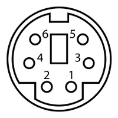
Descripción de los pines del conector MINI DIN de 6 pines:
Pin 6 – RXD del puerto RS-232 1 (por defecto: estación meteorológica),
Pin 4 – TXD del puerto RS-232 2 (por defecto: módulo GPS),
Pin 2 – GND (masa),
Pin 1 – salida de 5 V; no la cortocircuite; corriente máxima 100 mA,
Pin 3 – TXD del puerto RS-232 1 (por defecto: estación meteorológica),
Pin 5 – RXD del puerto RS-232 2 (por defecto: módulo GPS).
La salida de 5 V del puerto serie está protegida con un diodo y un fusible polimérico. La corriente máxima de salida no debe superar los 100 mA.
Si se activa el soporte de la interfaz Bluetooth en la configuración, el puerto RS-232 2 queda reservado para comprobar el estado de la conexión Bluetooth. En ese caso el puerto RS-232 1 funciona a 9600 baudios para comunicarse correctamente con la interfaz Bluetooth.
5.2. Conector RS-485
El conector RS-485 está pensado para los módulos externos WXTelemetry y WXBits.
Si va a usar los dos módulos externos de telemetría, WXTelemetry y WXBits, conéctelos en cadena: el par A+ y B- va del WX3in1 al primer módulo, y del primer módulo al segundo. Eléctricamente los dos módulos quedan en paralelo (A+ del WX3in1 va a A+ del primer módulo y de ahí a A+ del segundo; igual con B-). No conecte nunca A+ con B-.
5.3. Conector del termómetro
El conector del termómetro está pensado para un termómetro digital DS18B20 o DS18S20. Dispone de:
salida de 5 V (conectar a VDD del termómetro),
línea de datos DATA (conectar a DQ del termómetro),
GND (conectar a GND del termómetro).
6. Conexión del receptor GPS
El conector de puertos serie del WX3in1 Plus 2.0 es compatible con nuestro “GPS-RS232/Microsat - GPS receiver (minidin 6-pin)”, que se conecta directamente, sin adaptadores.
Puede usarse cualquier receptor GPS con un patillaje compatible y un consumo inferior a 100 mA (se recomienda menos de 60 mA, porque con corrientes mayores la caída de tensión en el diodo de protección y el fusible polimérico puede bajar de 5 V e impedir que el GPS funcione bien).
Si usa un receptor GPS de otro fabricante, debe proporcionar las sentencias NMEA GPRMC y GPGGA. La mayoría de receptores y módulos GPS actuales las admiten. La velocidad del puerto serie se selecciona en la configuración del WX3in1 Plus 2.0.
Para recibir los datos del GPS se usan estas líneas del puerto serie del WX3in1 Plus 2.0:
Pin 5 – RXD del puerto RS-232 2 (recepción de datos),
Pin 2 – MASA.
La comunicación con el receptor GPS es en un solo sentido (solo recepción), por lo que no se usa TXD del puerto RS-232 2 (aunque algunos de nuestros cables lo llevan conectado).
Si usa un receptor GPS de terceros, alimente el receptor con la tensión correcta (nuestro GPS-RS232/Microsat admite hasta 16 V CC, la mayoría de los demás solo 5 V ±10 %) y compruebe que usa niveles de tensión RS-232.
Si quiere conectar a la vez un receptor GPS y una estación meteorológica al WX3in1 Plus 2.0, consulte el capítulo “Conexión de la estación meteorológica”.
Un receptor GPS conectado sirve tanto para las cadenas <gps…> de las balizas (capítulo 10.7) como para los informes de posición GPS SmartBeaconing (capítulo 10.7.1).
7. Conexión de la estación meteorológica
7.1. Estaciones LaCrosse/Technoline WS-2300 y WS-2350
La única diferencia entre las estaciones WS-2300 y WS-2350 es que el fabricante incluye un adaptador externo de USB a RS232, que no se usa con el WX3in1 Plus 2.0.
Las estaciones WS-23XX necesitan una conexión algo peculiar. No tienen conexión de masa y necesitan tensiones de +5 V y -5 V para la interfaz (-5 V en el pin DTR y +5 V en el pin RTS). Para conectar una WS-23XX se usa TXD del puerto 2 del WX3in1 como fuente de tensión de polarización negativa en el pin DTR.
Para conectar una WS-2300 o WS-2350 al WX3in1 Plus 2.0 necesita:
“CAB02 - WX3in1 Plus 2.0/PLXDigi/PLXTracker serial interface cable (for WS-23XX)” – si no va a conectar también un receptor GPS,
“CAB28 - WX3in1 Plus 2.0 serial interface cable (for WS-23XX + GPS)” – si quiere conectar la estación meteorológica y el receptor GPS.
Los esquemas de ambos cables están en nuestra web.
El firmware v1.05 incluye el código de soporte de WS-23XX reescrito, que corrige los bloqueos de la estación observados con firmwares anteriores.
7.2. Estaciones Peet Bros Ultimeter
Las estaciones Peet Bros Ultimeter usan una interfaz serie RS-232 estándar con TXD, RXD y GND. Las demás líneas no se usan. La estación debe ponerse manualmente en modo “data logger”: según las instrucciones del fabricante, pulse CLEAR + WIND SPEED durante 3 segundos.
Desde el firmware v1.09 también puede usarse el modo “complete record mode”, que el WX3in1 Plus 2.0 decodifica correctamente.
Para conectar una Peet Bros Ultimeter al WX3in1 Plus 2.0 necesita:
“CAB29 - WX3in1 Plus 2.0 serial interface cable (for Davis, PeetBros)” – si no va a conectar también un receptor GPS,
“CAB27 - WX3in1 Plus 2.0 serial interface cable (for Davis, PeetBros + GPS)” – si quiere conectar la estación meteorológica y el receptor GPS.
Los esquemas de ambos cables están en nuestra web.
7.3. Estaciones Davis Vantage
Las estaciones Davis Vantage usan una interfaz serie RS-232 estándar con TXD, RXD y GND. Un cuarto hilo está unido a DCD, DTR y DSR dentro del conector DB-9 original, pero no debe usarse en el lado del WX3in1 Plus 2.0.
Para conectar el WX3in1 Plus 2.0 a una estación Davis necesita la interfaz RS-232 “datalogger” del fabricante, con referencia 06510SER.
El datalogger de Davis existe en dos versiones: datalogger “estándar” y datalogger “APRS”. Según la información disponible, ambas funcionan con el WX3in1 Plus 2.0 (el equipo no usa la función “APRS” del datalogger, pero el datalogger “APRS” tiene las mismas opciones de comunicación que el estándar).
Para conectar una Davis Vantage al WX3in1 Plus 2.0 necesita:
“CAB29 - WX3in1 Plus 2.0 serial interface cable (for Davis, PeetBros)” – si no va a conectar también un receptor GPS,
“CAB27 - WX3in1 Plus 2.0 serial interface cable (for Davis, PeetBros + GPS)” – si quiere conectar la estación meteorológica y el receptor GPS.
Los esquemas de ambos cables están en nuestra web.
8. Conexión de la interfaz Bluetooth
El conector de puertos serie del WX3in1 Plus 2.0 es compatible con nuestro “BT/Microsat - Bluetooth interface (minidin 6-pin)”, que se conecta directamente, sin adaptadores.
La interfaz Bluetooth permite conectar al WX3in1 Plus 2.0 un teléfono, una tableta o cualquier otro dispositivo Bluetooth. Solo hace falta una aplicación compatible con el protocolo KISS. En nuestras pruebas usamos APRSDroid 1.3.0, que recibe los paquetes del equipo y los muestra en un mapa. La aplicación también puede enviar paquetes de posición con su función SmartBeaconing, convirtiendo el WX3in1 Plus 2.0 en un tracker APRS.
La interfaz BT/Microsat ocupa los dos puertos serie del WX3in1 Plus 2.0, así que con el Bluetooth conectado no puede usarse ningún otro dispositivo serie.
Desde el firmware v1.12 el equipo tiene su propio GPS SmartBeaconing (capítulo 10.7.1). Necesita un receptor GPS en un puerto serie, por lo que no puede usarse junto con la interfaz Bluetooth. Con Bluetooth, el SmartBeaconing lo hace la aplicación del teléfono, como se explica arriba.
9. Conexión al PC
La configuración inicial del WX3in1 Plus 2.0 debe hacerse por USB con el software WX3in1 Plus 2.0 Configurator.
El WX3in1 Plus 2.0 entra en modo de configuración solo si detecta el cable USB al encenderse; se indica con el parpadeo del LED “PC/PACKET”.
Para conectarlo al ordenador siga estos pasos:
Apague el WX3in1 Plus 2.0,
Conecte el cable USB al ordenador,
Encienda el WX3in1 Plus 2.0,
Abra la aplicación Configurador.
Tras conectarlo y encenderlo, Windows detecta el WX3in1 Plus 2.0 como un nuevo dispositivo USB-HID (USB VID 0483, PID A124).
Recuerde desconectar el USB y apagar y encender el equipo después de configurarlo. Si al arrancar detecta el cable USB, el equipo no funciona normalmente; el USB solo se usa para la configuración y la actualización del firmware.
No hace falta instalar controladores, porque todas las versiones de Windows incluyen soporte HID estándar.
Ya puede usar el WX3in1 Plus 2.0 Configurator para leer, modificar y escribir la configuración del equipo. La imagen siguiente muestra la ventana de la aplicación.
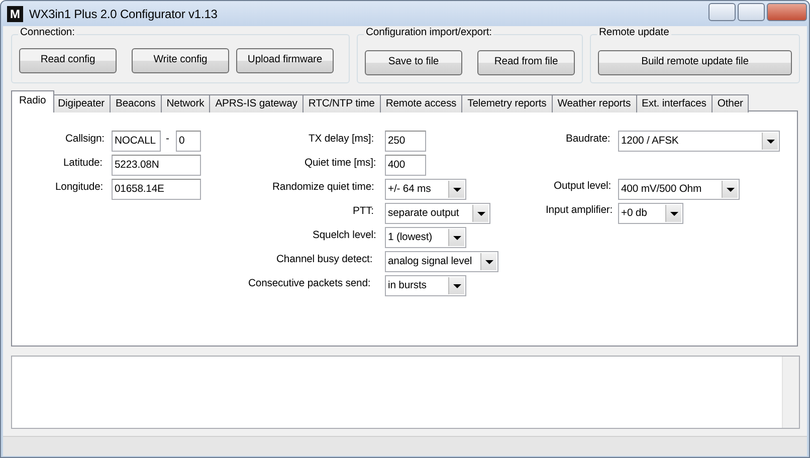
Configurator v1.13 layout (reconstruida)
10. Descripción del software de configuración
En este capítulo se describen todos los ajustes de la aplicación Configurador y su efecto en el funcionamiento del equipo. Los rangos de valores que acepta el Configurador están en el Apéndice B.
10.1. Lectura de la configuración del equipo
Para leer la configuración del equipo pulse el botón “Read config”. El programa descargará los valores de configuración actuales de la memoria interna del WX3in1 Plus 2.0.
10.2. Escritura de la configuración en el equipo
Después de introducir los valores en el Configurador, pulse “Write config” para guardar la configuración en la memoria interna del WX3in1 Plus 2.0.
10.3. Actualización del firmware
Si descarga una versión nueva del WX3in1 Plus 2.0 Configurator, debe actualizar también el firmware del equipo para que sea compatible con esa versión del Configurador.
Desde la versión 1.01, el firmware del WX3in1 Plus 2.0 va integrado en el ejecutable del Configurador, así que no hay un archivo de firmware aparte. Para actualizar el firmware pulse el botón “Upload firmware”. La actualización empieza automáticamente; espere a que termine.
No se preocupe: esta operación no puede “brickear” ni dañar el equipo. Si algo sale mal, basta con repetir la actualización del firmware.
Recuerde que el equipo debe actualizarse con el mismo número de versión de Configurador y de firmware. Además, después de grabar un firmware nuevo siempre hay que volver a escribir la configuración. El equipo no arranca si las versiones de configuración y firmware no coinciden. Si al encenderlo todos los LED parpadean, la versión de la configuración no coincide con la del firmware. Si la versión de firmware del equipo no coincide con la del Configurador, este muestra el mensaje “Uncompatible firmware version” con ambos números de versión y pide usar el botón “Upload firmware”.
10.4. Importar/exportar la configuración
Con el botón “Save to file” se exporta la configuración que aparece en la ventana del Configurador a un archivo del disco del PC. Con el botón “Read from file” se importa una configuración desde un archivo al Configurador. Estas funciones sirven para guardar la configuración del equipo y para pasarla a versiones más recientes del Configurador y del firmware.
Los archivos de configuración (*.cfg) son archivos de texto. Algunos campos pueden cambiar entre versiones de firmware, así que revise todas las pestañas después de importar un archivo guardado con una versión anterior del Configurador.
10.5. Pestaña Radio
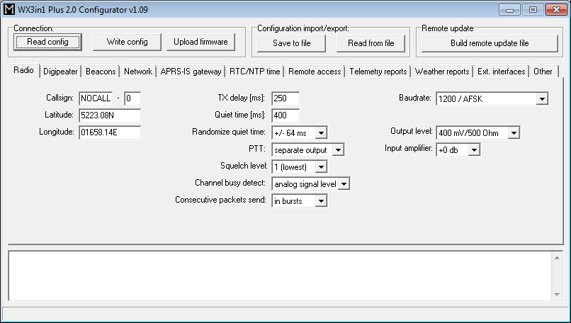
“Callsign” – indicativo de la estación con su extensión SSID. Admite hasta 6 caracteres. El SSID por defecto es 0 y los SSID permitidos van de 0 a 15,
“Latitude” - latitud (posición norte-sur) de la estación,
“Longitude” - longitud (posición este-oeste) de la estación.
En las balizas APRS la latitud se escribe como “XXYY.ZZD”, donde XX son grados, YY son minutos (1/60 de grado), ZZ son centésimas de minuto y D es N para norte o S para sur.
La longitud se escribe como “XXXYY.ZZD”, donde XXX son grados, YY son minutos (1/60 de grado), ZZ son centésimas de minuto y D es E para este o W para oeste.
Ejemplo: 37°23,10′ N, 5°59,40′ W se escribe 3723.10N y 00559.40W. Las coordenadas en formato APRS pueden consultarse fácilmente en el mapa de aprs.fi, que las muestra en la esquina superior izquierda de la pantalla.
“TX delay (ms)” – retardo en milisegundos antes de enviar un paquete APRS. Es la duración del preámbulo que se transmite antes del paquete, necesario para que los receptores se sincronicen. Se recomienda no bajar de 250 ms,
“Quiet time (ms)” – tiempo mínimo de espera después de que el canal de radio haya estado ocupado. Pasado este tiempo se puede enviar el siguiente paquete de la cola de transmisión,
“Randomize quiet time” - añade una variación aleatoria, distinta en cada paquete, al valor de Quiet time, dentro del rango elegido en esta casilla,
“PTT” – tipo de salida de pulsar para hablar; hay dos opciones:
“separate output” – el pin de salida PTT se cierra a masa durante la transmisión,
“2k2 resistor” - la salida de audio se cierra a masa a través de una resistencia de 2k2 ohmios; lo usan algunas radios portátiles para activar la transmisión,
“Squelch level” - nivel de silenciador (squelch); con valores más bajos se detecta señal útil con menor amplitud. El valor por defecto, 1, debería ser la mejor opción,
“Channel busy detect” - indica si el canal ocupado se detecta por la amplitud de la señal de entrada (“analog signal level”) o por la detección del inicio de un paquete correcto (“digital detect”). La segunda opción permite trabajar con el squelch de la radio abierto, pero puede provocar algunas colisiones de paquetes. La primera es la opción por defecto y la adecuada en la mayoría de los casos,
“Consecutive packet send” - hace que el equipo envíe todos los paquetes de la cola de TX seguidos, sin pausas (“in bursts”), o con TX delay, Quiet time y detección de canal ocupado entre cada paquete (“separately”). La primera es la opción por defecto y la que usan la mayoría de equipos APRS,
“Baudrate” - método de decodificación/codificación de paquetes. Normalmente se usa 1200/AFSK. No seleccione 9600/GMSK si no sabe exactamente lo que hace (véase también el capítulo 4.3),
“Output level” - nivel de la señal de audio que sale del WX3in1 Plus 2.0 hacia la radio,
“Input amplifier” - ganancia aplicada a la señal que entra de la radio al WX3in1 Plus 2.0.
Si es nuevo en APRS o pone en marcha el equipo por primera vez, cambie los campos Callsign, Latitude y Longitude por los valores correctos de su estación. Estos campos son importantes. Ajuste también la opción PTT según la conexión con su radio. Las demás opciones pueden dejarse como están, porque los valores por defecto deberían funcionar bien.
10.6. Pestaña Digipeater
La pestaña Digipeater contiene varias subpestañas para configurar las distintas opciones y filtros del digipetidor. Se describen a continuación.
10.6.1. Digipeater / Common settings (ajustes comunes)
“Digipeater on” – activa o desactiva la repetición (digipeat) de paquetes APRS de RF,
“Duplicate checking (s)” – tiempo en segundos durante el cual no se vuelve a repetir un paquete con el mismo contenido que el anterior. Permite ignorar estaciones que inundan la red y paquetes oídos poco antes que vuelven a llegar después de ser repetidos por otras estaciones.
10.6.2. Digipeater / PATH filter rules (reglas de ruta)
Aquí se introducen las rutas del paradigma New-N que tratará la función de digipetidor del WX3in1 Plus 2.0.
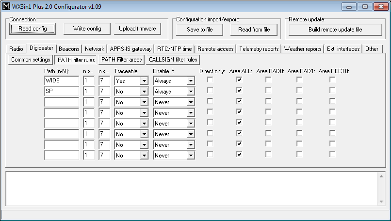
“Path (n-N)” – nombre de la ruta: WIDE, SP, etc.
“n>=” y “n<=” – n mínimo y máximo de las rutas que se repiten; por ejemplo, WIDEn-N con n>=1 y n<=3 repite las rutas WIDE3-3, WIDE3-2, WIDE3-1, WIDE2-2, WIDE2-1 y WIDE1-1,
“Traceable” – con Yes, el WX3in1 añade su propio indicativo a la ruta; con No, no lo añade,
“Enable if” – la regla puede estar desactivada (Never), activada (Always) o activada solo cuando no hay conexión con APRS-IS (No APRS-IS),
“Direct only” - el paquete solo se repite si en su ruta no aparece ningún otro digipetidor (no ha sido repetido por otra estación antes de llegar),
“Area ALL” - los paquetes se repiten sin límite de zona, esté donde esté la estación de origen,
“Area RAD0” - el paquete solo se repite si su origen está dentro de la zona RAD0 (descrita más abajo),
“Area RAD1” - el paquete solo se repite si su origen está dentro de la zona RAD1 (descrita más abajo),
“Area RECT0” - el paquete solo se repite si su origen está dentro de la zona RECT0 (descrita más abajo).
Si no va a usar filtros de zona, deje marcada la casilla “Area ALL” para que se repitan todos los paquetes independientemente de dónde esté la estación de origen.
Las reglas por defecto aceptan n hasta 7. En la mayoría de redes APRS actuales el máximo recomendado es n=2 (WIDE2-2), así que puede convenir poner “n<=” a 2 en la regla WIDE. Siga las recomendaciones de su red APRS local.
10.6.3. Digipeater / PATH filter areas (zonas)
Aquí se definen los filtros de zona, que limitan la repetición de paquetes según la ubicación de la estación de origen. Hay tres filtros distintos.
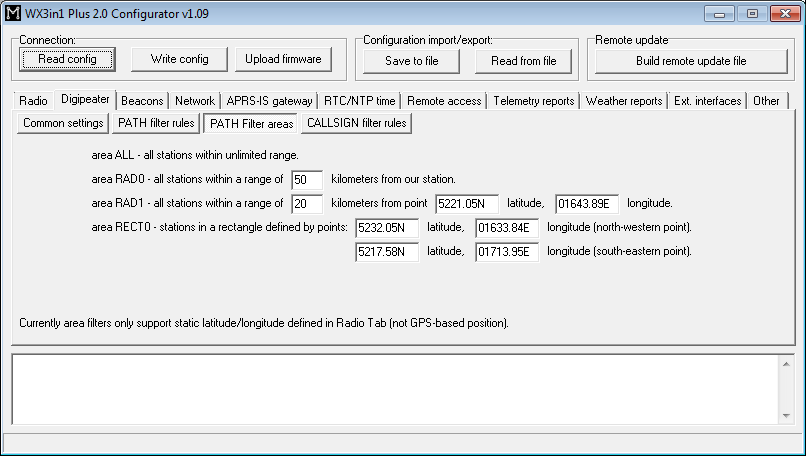
“area RAD0” - zona dentro de un radio alrededor de nuestra estación (la posición de la estación se define en la pestaña Radio),
“area RAD1” - zona dentro de un radio alrededor de un punto del mapa definido por su latitud y longitud,
“area RECT0” - zona rectangular definida por sus esquinas noroeste y sureste (con la latitud y longitud de cada punto).
Los filtros de zona solo usan la latitud/longitud fija definida en la pestaña Radio (no la posición del GPS). Las distancias se introducen en kilómetros (1 - 3000 km).
Configurator v1.13 layout (reconstruida) – 20 entradas de indicativo
El filtro de indicativos funciona como:
“lista negra” (“General rule:” en “Allow all, except below”: se repiten todos los indicativos excepto los de la lista), o
“lista blanca” (“General rule:” en “Deny all, except below”: solo se repiten los indicativos de la lista).
Desde el firmware v1.11 la lista tiene 20 entradas (10 en versiones anteriores). Cada entrada tiene un indicativo (hasta 6 caracteres) y un SSID (0 - 15, o * para cualquier SSID). En el campo del indicativo, el comodín * sustituye a todos los caracteres hasta el final del patrón, y el comodín ? (desde la v1.07) sustituye a un solo carácter (excepto el espacio).
Si es nuevo en APRS o pone en marcha el equipo por primera vez, puede dejar todas las opciones por defecto. Por defecto el equipo repite todos los paquetes con WIDEn-N en la ruta y también la ruta local polaca SPn-N. En España puede borrar SP de la segunda fila: está ahí como ejemplo de ruta New-N local.
10.7. Pestaña Beacons (balizas)
La pestaña Beacons tiene tres subpestañas: “Beacons 1-4”, “Beacons 5-8” y, desde el firmware v1.12, “GPS SmartBeaconing” (capítulo 10.7.1).
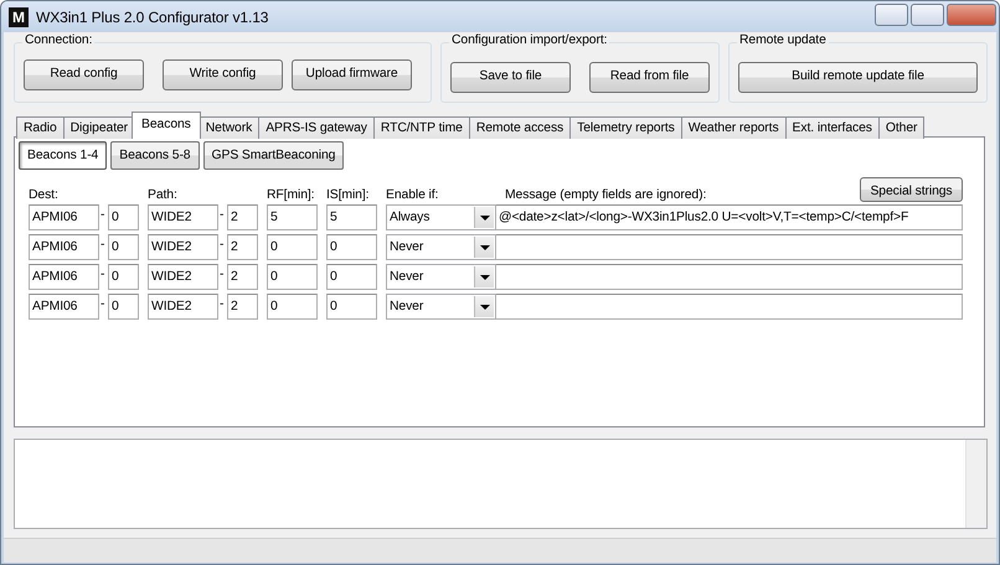
Configurator v1.13 layout (reconstruida)
“Dest” – campo de destino del paquete de baliza. Es mejor dejar el valor por defecto, que identifica el equipo como WX3in1 Plus 2.0 (y lo añade a la lista de estaciones en funcionamiento de la web del autor),
“Path” – ruta APRS (el valor por defecto, WIDE2-2, permite que la mayoría de digipetidores cercanos repitan el equipo); si deja este campo vacío, la baliza se envía sin ruta,
“RF[min]“ – intervalo de envío de la baliza por RF (en minutos, 5 - 1440); con 0 la baliza no se envía,
“IS[min]“ – intervalo de envío de la baliza a APRS-IS (en minutos, 5 - 1440); con 0 la baliza no se envía,
“Enable if”“No APRS-IS” desde v1.10 – condición para enviar la baliza:
“Never” – baliza desactivada,
“Always” – baliza siempre activada,
“GPS fixed” – la baliza solo se envía cuando el receptor GPS tiene posición válida (útil con <gpslat>/<gpslong>),
“GPS not fixed” – la baliza solo se envía cuando no hay posición GPS válida (por ejemplo, una baliza de reserva con la posición fija de la pestaña Radio),
“No APRS-IS” – la baliza solo se envía cuando no hay conexión con APRS-IS,
“Message“ – contenido del campo de información del paquete APRS (hasta 95 caracteres). Si se deja vacío, la baliza no se envía.
Para construir correctamente el campo de mensaje consulte la información sobre el formato de paquetes APRS.
<date>z – fecha y hora en formato DDHHMM (día/hora/minuto),
<lat>/<long> - latitud y longitud de la estación,
„-” - junto con el signo “/” entre <lat> y <long> define el símbolo de la estación (una casa en este ejemplo); la tabla de símbolos está en http://aprs.pl/ikony.htm,
WX3in1Plus2.0 U=<volt>V,T=<temp>C – texto de la baliza; <volt> se sustituye por la tensión de alimentación medida y <temp> por la temperatura del sensor externo.
Como se ve en el ejemplo, el WX3in1 Plus 2.0 admite unas cadenas especiales que se sustituyen automáticamente por el valor correspondiente. La lista completa aparece también en el Configurador al pulsar el botón “Special strings”:
<date> - fecha actual en formato DDHHMM (día/hora/minuto),
<lat> - latitud de la estación definida en la pestaña “Radio”,
<long> - longitud de la estación definida en la pestaña “Radio”,
<gpslat> - latitud recibida del GPS,
<gpslong> - longitud recibida del GPS,
<gpsdate> - hora recibida del GPS en formato DDHHMM,
<volt> - tensión de alimentación medida,
<temp> - temperatura de la entrada de termómetro del panel trasero (Celsius),
<tempf> - temperatura de la entrada de termómetro del panel trasero (Fahrenheit),
Nota importante: algunos usuarios sustituyen las cadenas especiales <date>, <lat>, <long>, <volt> por valores fijos. No es necesario. Si escribe por ejemplo “<date>” en la baliza, en su lugar aparecerá la fecha actual. Lo mismo ocurre con “<lat>”, “<long>”, “<volt>”, etc.
Si es nuevo en APRS o pone en marcha el equipo por primera vez, puede dejar todas las opciones por defecto. Por defecto el equipo envía cada 5 minutos, por RF y a APRS-IS, una baliza estándar con la hora, la latitud, la longitud y la tensión de alimentación. Con ella la estación debería aparecer en el mapa de aprs.fi.
10.7.1. Beacons / GPS SmartBeaconing NUEVO v1.12
Configurator v1.13 layout (reconstruida) – valores por defecto
Esta subpestaña configura los informes de posición generados a partir del receptor GPS conectado a un puerto serie (véanse los capítulos 6 y 10.14.5). Estos informes son independientes de las balizas 1-8.
“SmartBeaconing” – “Enabled” o “Disabled”; activa los informes de posición GPS SmartBeaconing,
“Position encoding protocol” – formato del informe de posición:
“Mic-E” – el formato más compacto; la posición, el rumbo y la velocidad se codifican en el campo de destino y en el campo de información,
“Plain text” – informe de posición APRS estándar sin comprimir (formato DDMM.MM),
“Base-91” – informe de posición APRS comprimido,
Grupo “SmartBeaconing settings”:
“Slow Speed [km/h]” y “Slow Period [s]” – por debajo de la velocidad lenta se envía un informe cada periodo lento,
“Fast Speed [km/h]” y “Fast Period [s]” – por encima de la velocidad rápida se envía un informe cada periodo rápido. Entre la velocidad lenta y la rápida el intervalo varía con la velocidad,
“Min Turn Angle [deg]”, “Turn Slope” y “Min Turn Time [s]” – ajustes de envío en curvas (“corner pegging”) del algoritmo SmartBeaconing estándar. Se envía un informe adicional cuando el rumbo cambia más que el umbral de giro, que es el ángulo mínimo de giro más la pendiente de giro dividida por la velocidad actual (el umbral es mayor a baja velocidad). Los informes por giro nunca se envían con más frecuencia que el tiempo mínimo de giro.
Valores por defecto: Min Turn Angle 27°, Turn Slope 410, Min Turn Time 5 s, Slow Speed 8 km/h, Slow Period 1800 s, Fast Speed 95 km/h, Fast Period 90 s.
Grupo “Report encoding settings”:
“Symbol code” y “Symbol table” – símbolo APRS de la estación móvil (por defecto “>” y “/”, un coche),
“Mic-E message” – mensaje de estado Mic-E: Off Duty, En Route, In Service, Returning, Committed, Special, Priority o Emergency (se usa con la codificación Mic-E). Use “Emergency” solo en una emergencia real,
“Path” – hasta tres elementos de ruta con su SSID (por defecto WIDE1-1, WIDE2-1),
“Status text” – texto opcional añadido al informe de posición (hasta 40 caracteres),
“Time” – marca de tiempo del informe: None (ninguna), “Hour, min, sec” (hora, minutos, segundos) o “Day, hour, min” (día, hora, minutos). Los informes Mic-E no tienen campo de hora,
“Course/Speed” – incluir rumbo y velocidad en el informe (Yes/No),
“Altitude” – incluir la altitud del GPS en el informe (Yes/No).
SmartBeaconing es útil cuando el equipo se instala en un vehículo. En un digipetidor o I-Gate fijo, déjelo en “Disabled” y use las balizas 1-8.
10.8. Pestaña Network (red)
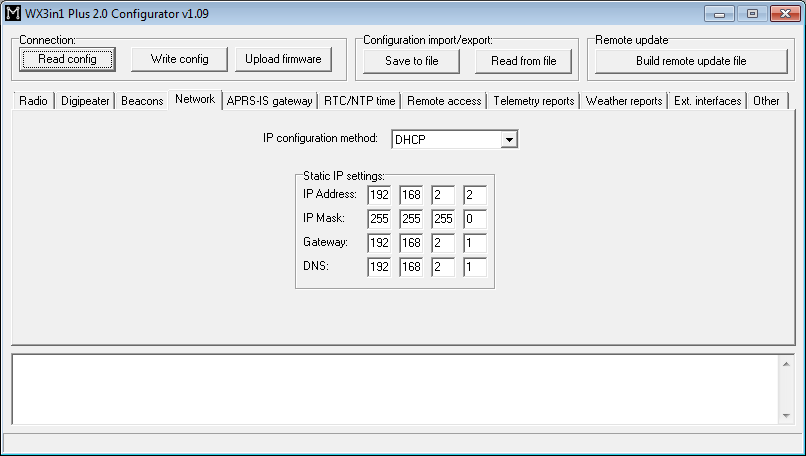
Hay dos métodos de configuración de red:
“DHCP” - el método habitual: los ajustes de red se reciben automáticamente de un servidor DHCP (normalmente el router),
“Static IP” - todos los ajustes de red se configuran manualmente.
Si usa “Static IP”, debe conocer la configuración de su red y rellenar a mano estos campos:
“IP Address” - dirección IP del WX3in1 Plus 2.0; elija una dirección libre de su red local,
“IP Mask” - máscara de subred de la red local,
“Gateway” - dirección IP del router u otro equipo que da acceso a Internet en la red local,
“DNS” - dirección del servidor de nombres (DNS) de su proveedor de Internet; normalmente puede usar también la IP del router, ya que la mayoría reenvía las consultas DNS.
Estos ajustes deben coincidir con la configuración de su red local y de su acceso a Internet.
Si usa DHCP en un equipo instalado en un lugar remoto, conviene reservar su dirección IP en la configuración del servidor DHCP (router). El firmware v1.06 corrigió los bloqueos de la conexión APRS-IS cuando el servidor DHCP asignaba una IP nueva, y la v1.07 corrigió las renovaciones innecesarias con concesiones de más de 31 días.
10.9. Pestaña APRS-IS gateway (pasarela APRS-IS)
Esta pestaña reúne todos los ajustes de la conexión con el servidor APRS-IS T2, incluido el reenvío de paquetes de RF a APRS-IS (i-gate) y de APRS-IS a RF.
10.9.1. APRS-IS gateway / APRS-IS server
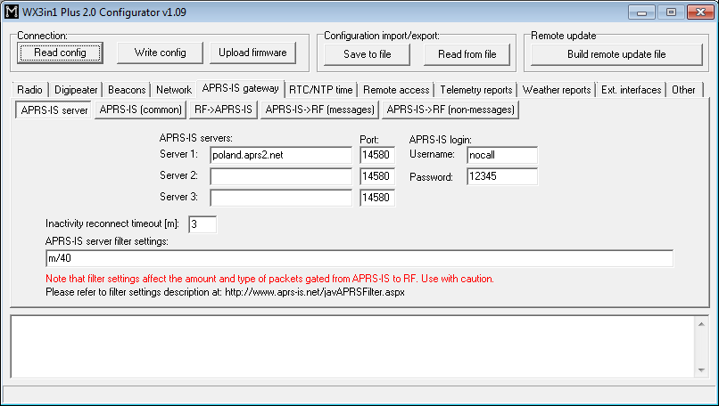
“APRS-IS servers” - nombres de dominio o direcciones IP de los servidores APRS-IS T2 a los que se conectará el WX3in1 Plus 2.0. Hay una lista en http://www.aprs2.net/serverstats.php.
“APRS-IS port” - puertos IP de los servidores APRS-IS; normalmente sirve el puerto por defecto, 14580.
“APRS-IS login username” - su indicativo con SSID, el mismo que en la pestaña Radio,
“APRS-IS login password” - contraseña (passcode) de su indicativo; la genera el administrador de su servidor APRS-IS,
“Inactivity reconnect timeout [m]” – tiempo tras el cual el WX3in1 Plus 2.0 intentará reconectarse al servidor APRS-IS. La mayoría de servidores envían una cadena “keepalive” cada pocas decenas de segundos, así que si no se reciben datos durante más tiempo se puede suponer que la conexión ha fallado. El valor por defecto, 3 minutos, debería funcionar bien.
“APRS-IS server filter settings” - cadena de filtro global que se envía al servidor APRS-IS tras iniciar sesión e indica qué paquetes se quieren recibir. El valor por defecto, “m/40”, pide al servidor todas las posiciones y objetos de las estaciones en un radio de 40 km. También se reciben los mensajes dirigidos a esas estaciones.
El filtro del servidor APRS-IS puede ser peligroso si no se sabe lo que se hace. Evite filtros muy amplios para no recibir una avalancha de paquetes del servidor. Todos los paquetes recibidos de APRS-IS se procesan según los ajustes de las pestañas de pasarela, y pueden transmitirse por RF como “paquetes de terceros”.
10.9.2. APRS-IS gateway / APRS-IS (common)
“APRS-IS heard buffer timeout [m]” - tiempo (en minutos) tras el cual los indicativos de las estaciones oídas en el servidor APRS-IS se borran del búfer “APRS-IS heard”.
Hace falta guardar los indicativos de las estaciones oídas en APRS-IS porque:
1) Los mensajes dirigidos a esas estaciones no deben reenviarse de APRS-IS a RF (se supone que si una estación se oye en APRS-IS tiene conexión a Internet, de modo que ya ha recibido el mensaje directamente de APRS-IS y no hace falta transmitirlo por RF),
“APRS-IS to RF dest” - campo de destino por defecto que se aplica a todos los paquetes reenviados de APRS-IS a RF.
10.9.3. APRS-IS gateway / RF->APRS-IS
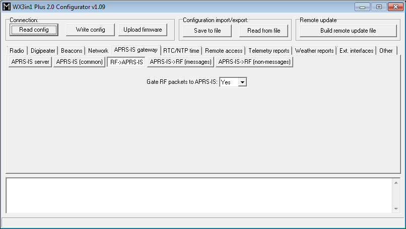
“Gate RF packets to APRS-IS” - si está activado, el equipo reenvía a APRS-IS todos los paquetes recibidos por RF.
10.9.4. APRS-IS gateway / APRS-IS->RF (messages)
A continuación se llama “mensajes” a los paquetes de tipo mensaje, y “no mensajes” a todos los demás paquetes.
“Gate messages to local RF” - si está activado, el equipo reenvía los mensajes a las estaciones oídas en RF local,
“Message path” - ruta por defecto de los mensajes reenviados de APRS-IS a RF,
“Local RF heard max. digi-hops” - las estaciones cuyos paquetes llegan tras pasar por un número de digipetidores no mayor que este valor se consideran estaciones de RF local,
“Local RF heard buffer timeout [m]” - tiempo (en minutos) tras el cual las estaciones oídas en RF local se borran del búfer “local RF heard”.
La diferencia entre el búfer de RF local y el búfer de RF es:
1) El búfer de RF local guarda los indicativos oídos dentro de un número limitado de saltos, 2) El búfer de RF guarda el resto de indicativos oídos por RF.
Las estaciones de RF local pueden recibir mensajes porque están cerca; las estaciones del búfer de RF no, porque aunque se oyen por RF están demasiado lejos.
Hace falta guardar los indicativos de las estaciones oídas en RF local porque:
1) Solo esas estaciones pueden ser destinatarias de mensajes. 2) Si el remitente de un mensaje se ha oído en RF local, su mensaje no debe reenviarse de APRS-IS a RF (está cerca y probablemente ya ha transmitido el mismo mensaje directamente por RF).
“Gate non-message packets to RF” - si está activado, los paquetes que no son mensajes se reenvían de APRS-IS a RF según las reglas de filtro descritas más abajo,
“Non-message path” - ruta por defecto de los paquetes no mensaje reenviados de APRS-IS a RF,
“Gate if source station heard via RF” - si está activado, el equipo reenvía paquetes de APRS-IS a RF aunque la estación de origen se haya oído por RF. Debería estar desactivado,
“RF heard buffer timeout [m]” - tiempo (en minutos) tras el cual las estaciones oídas por RF se borran del búfer “RF heard”.
Hace falta guardar los indicativos de las estaciones oídas por RF porque:
1) Si una estación se oye por RF y “Gate if source station heard via RF” está desactivado, sus paquetes no mensaje no se reenvían de APRS-IS a RF. 2) Si el remitente de un mensaje se ha oído por RF, su mensaje no debe reenviarse de APRS-IS a RF (está cerca y probablemente ya ha transmitido el mismo mensaje directamente por RF).
“Max. packets per 1 / 2 / 3 min” - número máximo de paquetes reenviados de APRS-IS a RF en periodos de 1 / 2 / 3 minutos. Limita el número de paquetes reenviados para no saturar el canal.
“Filter setup”24 entradas desde v1.11 - este botón abre el filtro de paquetes no mensaje de APRS-IS a RF (estilo UI-View). Por defecto se rechazan todos los paquetes. Las entradas se procesan de la primera a la última comprobando el tipo de paquete y la estación permitidos. El orden importa: la comparación se detiene en la primera coincidencia, así que lo que se permite o rechaza en una entrada ya no se comprueba en las siguientes. En los indicativos se pueden usar los comodines * (todos los caracteres hasta el final del patrón) y ? (un solo carácter, excepto el espacio). El SSID puede ser 0 - 15 o *. Los tipos de entrada son:
Not used – la entrada se ignora,
Allow all – se permiten todos los paquetes de la estación indicada en los campos indicativo/SSID,
Deny all – se rechazan todos los paquetes de la estación indicada en los campos indicativo/SSID,
Beacons – paquetes de baliza que empiezan por '!', '/', '=' o '@' de la estación indicada,
Destination – todos los paquetes cuyo campo de destino coincide con los campos indicativo/SSID,
Telemetry – mensajes de parámetros de telemetría (PARM, UNIT, EQNS, BITS) de la estación indicada,
Recuerde que los paquetes que procesa este filtro deben llegar antes desde el servidor APRS-IS. Por eso hay que usar también la cadena “APRS-IS server filter settings” (en la pestaña APRS-IS server; el valor por defecto “m/40” sirve para las primeras pruebas) para indicar al servidor qué se quiere recibir.
El reenvío de APRS-IS a RF es un tema delicado. Todos estos ajustes existen para que el reenvío sea equilibrado y limitado, porque la capacidad de RF es mucho menor que la de Internet y no debe saturarse con tráfico innecesario. Con los valores por defecto de esta pestaña se reenvía todo de RF a APRS-IS (sin riesgo) y los mensajes de APRS-IS a las estaciones de RF local (poco tráfico). El resto de paquetes no se reenvía de APRS-IS a RF.
10.10. Pestaña RTC/NTP time (reloj y NTP)
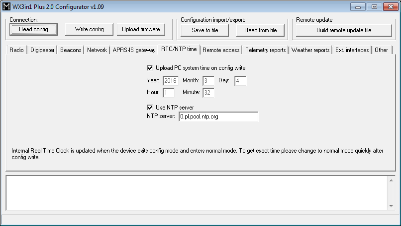
“Upload PC system time on config write” - con esta opción marcada, la aplicación ignora los campos de fecha y hora de debajo y envía la hora del sistema del PC al escribir la configuración,
“Year”, “Month”, “Day”, “Hour”, “Minute” - fecha y hora definidas por el usuario para el WX3in1 Plus 2.0,
“Use NTP server” - con esta opción marcada, el WX3in1 Plus 2.0 se conecta periódicamente al servidor de hora indicado y sincroniza su reloj,
“NTP server” - nombre de dominio o IP del servidor de hora; en algunos casos puede ser la IP del router, si tiene activado el servicio NTP.
El reloj interno (RTC) se actualiza cuando el equipo sale del modo de configuración y pasa al modo normal. Para que la hora sea exacta, reinicie el equipo en modo normal poco después de escribir la configuración.
Con la opción “Use NTP server” la hora se actualiza desde un servidor NTP de Internet. El servidor por defecto es del grupo polaco (0.pl.pool.ntp.org). En España puede usar 0.es.pool.ntp.org, o el grupo global pool.ntp.org.
10.11. Pestaña Remote access (acceso remoto)
Esta pestaña reúne todos los ajustes de acceso remoto al equipo con distintos métodos y protocolos. Desde el firmware v1.10 tiene cinco subpestañas: WWW, Telnet, KISS via TCP/IP, APRS-IS simple server y Statistics upload.
10.11.1. Remote access / WWW
Configurator v1.13 layout (reconstruida)
“WWW user” - usuario para acceder a la web del WX3in1 Plus 2.0,
“WWW password” - contraseña para acceder a la web del WX3in1 Plus 2.0,
“WWW port” - número de puerto IP del servicio web,
“Alternative logo password”no descrito antes - contraseña que activa un logotipo alternativo en las páginas web del equipo. Deje el valor por defecto “none” si no le han facilitado esa contraseña.
Para acceder a la web del WX3in1 Plus 2.0, abra un navegador y conéctese a la dirección IP definida en la pestaña Network. Por ejemplo, para un equipo con la IP 192.168.2.2 escriba http://192.168.2.2/ en la barra de direcciones.
El usuario y la contraseña por defecto de WWW, telnet y del servidor APRS-IS simple son “admin”/“admin”. Cámbielos antes de conectar el equipo a una red accesible desde Internet.
10.11.2. Remote access / Telnet
“Telnet user” - usuario para acceder por telnet al WX3in1 Plus 2.0,
“Telnet password” - contraseña para acceder por telnet al WX3in1 Plus 2.0,
“Telnet port” - número de puerto IP de telnet,
“Telnet debug messages” - las opciones de este grupo indican qué mensajes de depuración están activados por defecto cada vez que se conecta al WX3in1 Plus 2.0 con un terminal telnet.
El acceso por telnet es muy útil para depurar la configuración del WX3in1 Plus 2.0 y toda la instalación. Un usuario con experiencia puede resolver la mayoría de problemas analizando los mensajes de depuración que envía el equipo, de forma parecida al registro del sistema de Linux. Se recomienda el cliente PuTTY, un terminal gratuito para Windows y Linux: http://www.chiark.greenend.org.uk/~sgtatham/putty/.
10.11.3. Remote access / KISS via TCP/IP
“KISS via TCP/IP enable” - activa o desactiva la función KISS por TCP/IP,
“KISS via TCP/IP port” - número de puerto de KISS por TCP/IP.
10.11.4. Remote access / APRS-IS simple server
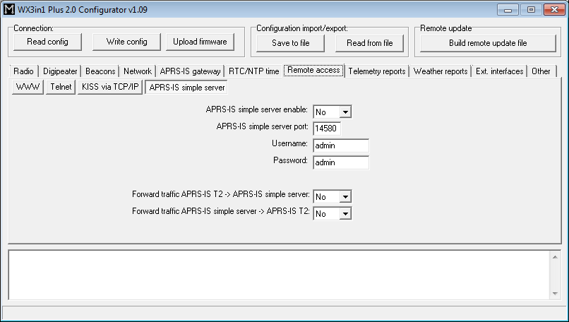
“APRS-IS simple server enable” - activa o desactiva el servidor APRS-IS simple,
“APRS-IS simple server port” - número de puerto del servidor APRS-IS simple,
“Username” - usuario para acceder al servidor APRS-IS simple,
“Password” - contraseña para acceder al servidor APRS-IS simple,
“Forward traffic APRS-IS T2 → APRS-IS simple server” - si está activado, todo el tráfico del servidor APRS-IS T2 (definido en APRS-IS gateway / APRS-IS server) se reenvía al socket del servidor APRS-IS simple,
“Forward traffic APRS-IS simple server → APRS-IS T2” - si está activado, todo el tráfico del socket del servidor APRS-IS simple se reenvía al servidor APRS-IS T2 (definido en APRS-IS gateway / APRS-IS server).
Use esta función con precaución y solo si sabe lo que hace. Con el servidor APRS-IS simple se pueden enviar paquetes a RF y a los servidores T2 a través del WX3in1 Plus 2.0 sin ninguna limitación.
10.11.5. Remote access / Statistics upload NUEVO v1.10
Configurator v1.13 layout (reconstruida) – valores por defecto
El envío de estadísticas es una función experimental añadida en el firmware v1.10. Si está activada, el equipo envía periódicamente sus estadísticas a un servidor HTTP.
“Statistics upload enable” - activa (Yes) o desactiva (No) el envío de estadísticas,
“Device ID” - número que identifica el equipo en el servidor de estadísticas (hasta 5 cifras),
“Upload server hostname” - nombre de dominio o dirección IP del servidor de estadísticas (hasta 48 caracteres),
“Upload server port” - puerto TCP del servidor de estadísticas (0 - 65535, normalmente 80),
“Upload server path” - ruta del script del servidor que recibe las estadísticas (hasta 32 caracteres; por defecto “APRS/aprs_stat.php”),
“Upload interval [min]” - cada cuánto se envían las estadísticas (1 - 240 minutos).
La parte del servidor no forma parte del equipo. Use esta función solo si dispone de un servidor preparado para recibir las estadísticas; si no, déjela desactivada. Los valores por defecto (Device ID 123, servidor 192.168.2.1) son solo ejemplos.
10.12. Pestaña Telemetry reports (telemetría)
Esta pestaña reúne todos los ajustes de los informes de telemetría del protocolo APRS. Los informes de telemetría permiten enviar distintos datos a APRS, que después pueden representarse en gráficas en servicios web conectados a la red APRS/APRS-IS (como el conocido aprs.fi).
Hay más información sobre el formato de telemetría en la especificación APRS: http://aprs.org/doc/APRS101.PDF, página 68.
10.12.1. Telemetry reports / Report settings
“Telemetry parameters” – grupo de campos de los paquetes de parámetros PARM, UNIT, EQNS y BITS, que describen los datos de telemetría enviados por el equipo,
“Dest” – campo de destino del paquete de parámetros,
“Path” – ruta APRS (el valor por defecto, WIDE2-2, permite que la mayoría de digipetidores cercanos repitan el equipo); si se deja vacío, el paquete se envía sin ruta,
“RF[min]“ – intervalo de envío del paquete de parámetros por RF (en minutos); con 0 no se envía,
“IS[min]“ – intervalo de envío del paquete de parámetros a APRS-IS (en minutos); con 0 no se envía,
“Telemetry data” – grupo de campos de los informes de datos de telemetría,
“Dest” – campo de destino del paquete de datos,
“Path” – ruta APRS (el valor por defecto, WIDE2-2, permite que la mayoría de digipetidores cercanos repitan el equipo); si se deja vacío, el paquete se envía sin ruta,
“RF[min]“ – intervalo de envío del paquete de datos por RF (en minutos); con 0 no se envía,
“IS[min]“ – intervalo de envío del paquete de datos a APRS-IS (en minutos); con 0 no se envía,
“Telemetry project title” - nombre del proyecto asociado a la estación de telemetría, enviado en el mensaje BITS (hasta 23 caracteres),
“First telemetry data packet delay [min]” - retardo del primer paquete de datos de telemetría; permite acumular datos (sobre todo para los informes de 10 y 60 minutos) tras encender el equipo,
“Telemetry reports” - si está desactivado, no se envían mensajes de parámetros ni de datos de telemetría.
10.12.2. Telemetry reports / Analog channels
Esta pestaña define los 5 canales analógicos de los informes de telemetría APRS. Se pueden elegir muchas fuentes de datos para los canales: datos del módulo externo WXTelemetry (M), de otros dispositivos externos (E) y datos internos del equipo (I).
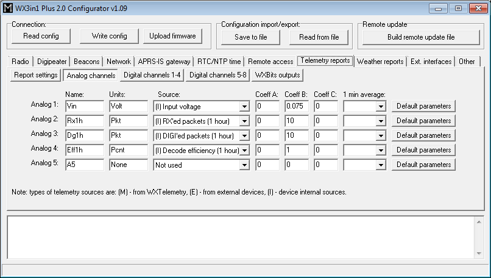
“Name” - nombre corto del canal; su longitud está limitada por el estándar APRS y varía según el número de canal,
“Units” - nombre corto de las unidades del canal; su longitud está limitada por el estándar APRS y varía según el número de canal,
“Source” - el campo más importante: indica qué dato se envía en el canal. Las fuentes (M) corresponden al módulo WXTelemetry y las (I) a estadísticas y medidas internas del equipo,
“Coeff A”, “Coeff B”, “Coeff C” - coeficientes que indican a quien recibe los informes cómo convertir el valor analógico: valor = A*dato*dato + B*dato + C,
“1 min average” - solo funciona con datos del módulo externo de telemetría (M); indica si los valores se promedian o no,
“Default parameters” – pulse este botón después de cambiar la fuente de un canal. Carga los coeficientes y el nombre/unidades por defecto del canal.
Fuentes disponibles en el Configurador v1.13:
Tipo
Fuentes
(M) WXTelemetry
Current1 (fondo de escala 5A / 2,5A / 1,25A), Current2 (fondo de escala 5A / 2,5A / 1,25A), Voltage1, Voltage2, Temperature (DS18B20), Temperature (DS18S20)
(E) externa
Temperature (DS18B20), Temperature (DS18S20) – termómetro del panel trasero
(I) interna
Input voltage (tensión de alimentación); RX'ed packets (paquetes recibidos, 1 hora / 10 min); DIGI'ed packets (paquetes repetidos, 1 hora / 10 min); Decode efficiency (eficiencia de decodificación, total / 1 hora); DIGI'ed/RX'ed (1 hora / total)v1.12; DIGI'ed/pkt starts (1 hora / total)v1.12
Desde el firmware v1.12 las estadísticas de paquetes pueden enviarse con valores de hasta 999 (255 en versiones anteriores).
Nota importante: si cambia el campo “Source” de un canal, cambie también los campos “Name”, “Units” y los coeficientes. Si no, quien reciba sus datos (incluidos servicios como aprs.fi) no podrá interpretar correctamente los informes. Cada fuente tiene sus propios coeficientes, nombres y unidades. En el Configurador USB se obtienen los valores por defecto con el botón “Default parameters”. Si cambia la configuración por WWW, tendrá que poner estos campos a mano (puede anotarlos antes desde el Configurador USB).
El firmware v1.01 corrigió los coeficientes de dos canales por defecto. Si usaba valores antiguos, cámbielos a: termómetro del panel trasero 0.0, 0.5, -64 (resolución de 0,5 °C) y tensión de alimentación 0.0, 0.075, 0.0.
10.12.3. Telemetry reports / Digital channels
Esta pestaña define los 8 canales digitales de los informes de telemetría APRS. Se usa cuando está conectado el módulo WXBits.
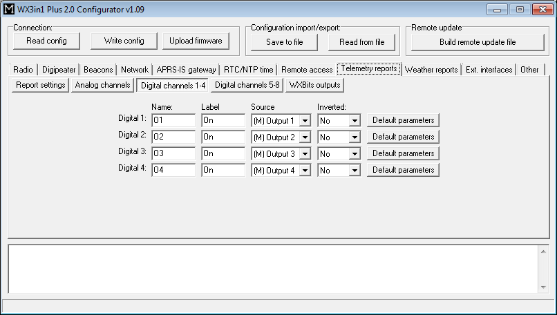
“Name” - nombre corto del canal; su longitud está limitada por el estándar APRS y varía según el número de canal,
“Label” - etiqueta corta del canal; su longitud está limitada por el estándar APRS y varía según el número de canal,
“Source” - el campo más importante: indica qué dato se envía en el canal; las fuentes (M) corresponden al módulo WXBits,
“Inverted” - indica si el canal se informa invertido en el mensaje de telemetría BITS,
“Default parameters” – pulse este botón después de cambiar la fuente de un canal. Carga el nombre y la etiqueta por defecto del canal.
Nota importante: si cambia el campo “Source” de un canal, cambie también los campos “Name”, “Label” e “Inverted”. Si no, quien reciba sus datos (incluidos servicios como aprs.fi) no podrá interpretar correctamente los informes.
10.12.4. Telemetry reports / WXBits outputs
Esta pestaña define el estado por defecto de las salidas del módulo WXBits. Tras el encendido, el WX3in1 Plus 2.0 intentará mantener las salidas en esos estados, salvo que el usuario los cambie.
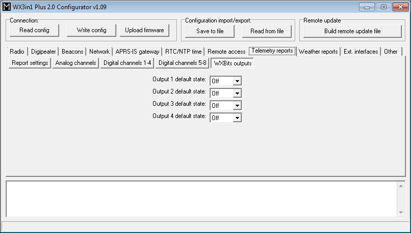
10.13. Pestaña Weather reports (meteorología)
Esta pestaña reúne todos los ajustes de los informes meteorológicos. Para enviarlos hace falta una estación meteorológica compatible conectada al WX3in1 Plus 2.0.
10.13.1. Weather reports / Weather beacon
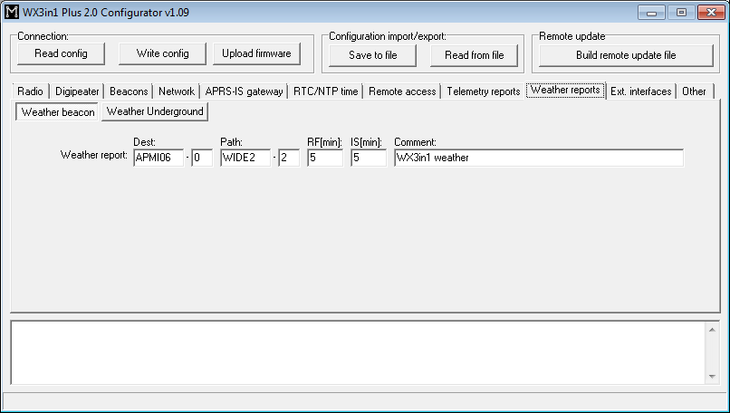
“Dest” – campo de destino del informe meteorológico,
“Path” – ruta APRS (el valor por defecto, WIDE2-2, permite que la mayoría de digipetidores cercanos repitan el equipo); si se deja vacío, el informe se envía sin ruta,
“RF[min]“ – intervalo de envío del informe por RF (en minutos); con 0 no se envía,
“IS[min]“ – intervalo de envío del informe a APRS-IS (en minutos); con 0 no se envía,
“Comment“ – comentario corto que se añade al final del informe meteorológico (hasta 32 caracteres).
10.13.2. Weather reports / Weather Underground
Esta pestaña corresponde al servicio Weather Underground, que permite subir y almacenar los datos meteorológicos de la estación.
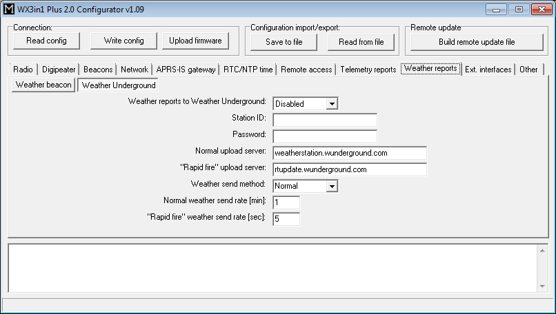
“Weather reports to WeatherUnderground” – activa el envío a WeatherUnderground en el WX3in1 Plus 2.0,
“Station ID” – identificador de la estación, asignado al dar de alta la estación en la cuenta de WeatherUnderground,
“Password” – contraseña de la cuenta de WeatherUnderground (según la información disponible, es la misma para todas las estaciones de la cuenta),
“Normal upload server” – nombre del servidor de WeatherUnderground que recibe los informes; déjelo como está (weatherstation.wunderground.com),
“Rapid fire upload server” - nombre del servidor de WeatherUnderground que recibe los informes “rapid fire”; déjelo como está (rtupdate.wunderground.com),
“Weather send method” – elige entre envío “rapid fire” (actualización frecuente en tiempo real) o envío normal cada pocos minutos,
“Normal weather send rate [min]” – frecuencia del envío normal (en minutos, 1 - 240),
“Rapid fire weather send rate [sec]” – frecuencia del envío “rapid fire” en tiempo real (en segundos, 5 - 60).
Weather Underground cambió sus servidores después de publicarse el firmware v1.12. El firmware v1.13 incluye la corrección necesaria para esos cambiosv1.13, así que use el firmware v1.13 para enviar datos a Weather Underground. Weather Underground podría volver a cambiar su servicio en el futuro. Si los informes dejan de llegar, revise los mensajes de depuración telnet “Wunderground”.
Esta pestaña reúne los ajustes de todos los dispositivos e interfaces externos que pueden conectarse al WX3in1 Plus 2.0 a través de los puertos serie del panel trasero.
10.14.1. Ext. interfaces / RS-232 ports
“BT/Microsat Bluetooth connected” - actívelo si tiene la interfaz Bluetooth BT/Microsat conectada al puerto serie del equipo.
Con el módulo Bluetooth conectado al puerto serie, solo funciona el puerto 1 (en modo Bluetooth) y el puerto 2 queda desactivado.
“RS-232 port 1” - función del puerto serie 1: None (ninguna), Weather station (estación meteorológica, por defecto), GPS, RSS-131 gamma monitor o KISS,
“RS-232 port 2” - función del puerto serie 2: None (ninguna), Weather station, GPS (por defecto), RSS-131 gamma monitor o KISS.
No todas las combinaciones de los puertos RS-232 1 y 2 son posibles. Si en un puerto se selecciona una estación WS-2300 o WS-2350, el otro puerto solo puede funcionar en modo de recepción (por ejemplo, GPS).
10.14.2. Ext. interfaces / RS-485 port
“WXTelemetry module (RS-485)” - activa o desactiva el soporte del módulo WXTelemetry,
“WXBits module (RS-485)” - activa o desactiva el soporte del módulo WXBits.
10.14.3. Ext. interfaces / Thermometer port
“Thermometer support” - activa o desactiva el termómetro conectado al panel trasero,
“Thermometer model” - modelo del termómetro (DS18B20 o DS18S20).
10.14.4. Ext. interfaces / Weather station
“Weather station model” - modelo de estación meteorológica conectada al puerto serie del WX3in1 Plus 2.0.
10.14.5. Ext. interfaces / GPS receiver
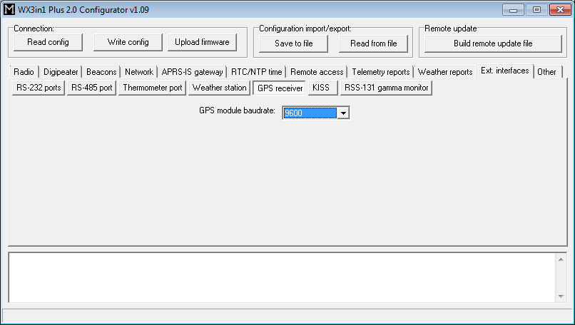
“GPS module baudrate” - velocidad de comunicación con el módulo GPS (1200 - 19200 baudios). El firmware v1.01 corrigió este ajuste; con la v1.00 el GPS funcionaba siempre a 9600 baudios.
10.14.6. Ext. interfaces / KISS
“KISS baudrate” - velocidad de comunicación de los paquetes KISS,
“KISS direction” - sentido de KISS:
“RF->serial” - solo salida de los paquetes recibidos por RF,
“both” - salida de los paquetes recibidos por RF y transmisión por RF de los paquetes recibidos por el puerto serie,
“Check for serial->RF packet correctness” - si está activado, intenta evitar que se transmitan por RF paquetes dañados o mal formados recibidos por el puerto serie.
10.14.7. Ext. interfaces / RSS-131 gamma monitor
Esta pestaña contiene los ajustes del monitor de radiación gamma RSS-131. La función se añadió en el firmware v1.07 a petición de usuarios. Para más información sobre el soporte de este equipo, contacte con Microsat por correo electrónico.
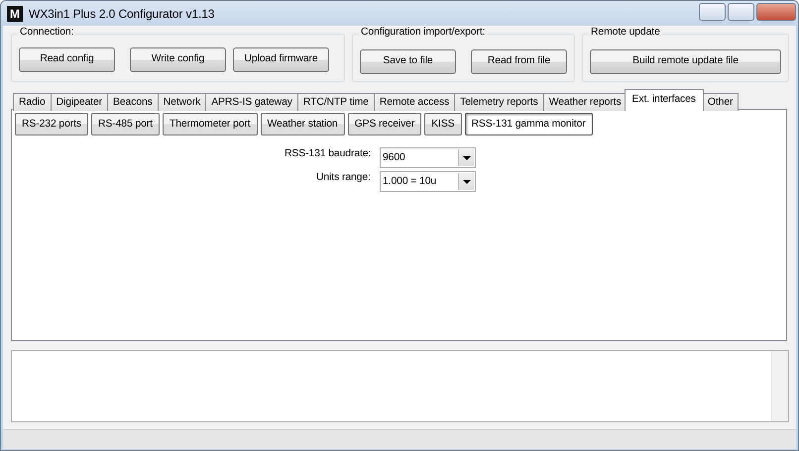
Configurator v1.13 layout (reconstruida)
“RSS-131 baudrate” - velocidad del puerto serie del monitor gamma (2400, 4800, 9600 o 19200),
“Units range” - escala del valor informado (1.000 = 1u, 10u, 100u, 1m, 10m o 100m).
Para usar el monitor gamma, asigne la función “RSS-131 gamma monitor” a uno de los puertos RS-232 (capítulo 10.14.1). El valor medido puede enviarse en las balizas con la cadena especial <gamma> (capítulo 10.7).
10.15. Pestaña Other (otros) no descrita antes
10.15.1. Other / Voltage measurement
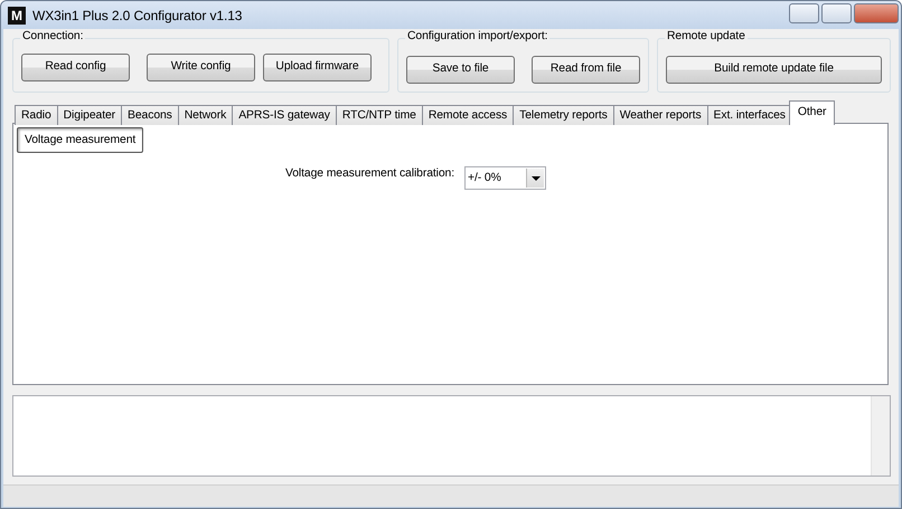
Configurator v1.13 layout (reconstruida)
“Voltage measurement calibration” - corrección de la medida de la tensión de alimentación, de -5,0 % a +5,0 % en pasos de 0,5 % (por defecto +/- 0 %). Esta opción se añadió en el firmware v1.07. Mida la tensión de alimentación con un buen polímetro y elija la corrección que haga coincidir la tensión que muestra el equipo (telnet, WWW, cadena de baliza <volt>).
11. Interfaz telnet
La interfaz telnet es una forma muy buena de ver lo que ocurre dentro del WX3in1 Plus 2.0. Ofrece muchos mensajes de depuración y estadísticas que permiten localizar y resolver posibles problemas.
11.1. Cliente telnet
Para conectarse a la interfaz telnet del WX3in1 Plus 2.0 necesita un cliente telnet. Se recomienda la aplicación de código abierto PuTTY, disponible en http://www.putty.org/. En Linux también puede usarse el comando estándar telnet.
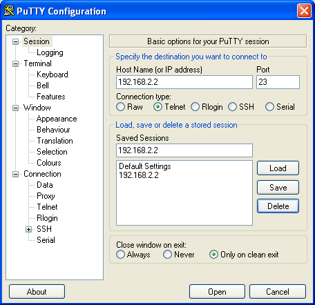
Para configurar PuTTY como terminal telnet del WX3in1 Plus 2.0, rellene estos campos (visibles en la imagen):
Host Name (or IP address) – dirección IP del WX3in1 Plus 2.0 en la red,
Connection type: Telnet (importante, se usa una interfaz telnet sencilla),
Port – el mismo valor que “Telnet port” en la configuración del equipo.
Una vez introducidos los valores, puede guardarlos con el botón “Save”.
Conéctese al equipo con el botón “Open”. Aparecerá la ventana negra del terminal telnet pidiendo “Username” y “Password”. Use los valores de la configuración del equipo.
11.2. Comandos telnet
Para ver la lista de comandos telnet del WX3in1 Plus 2.0 escriba el comando “help”; aparecerá una lista completa como esta:
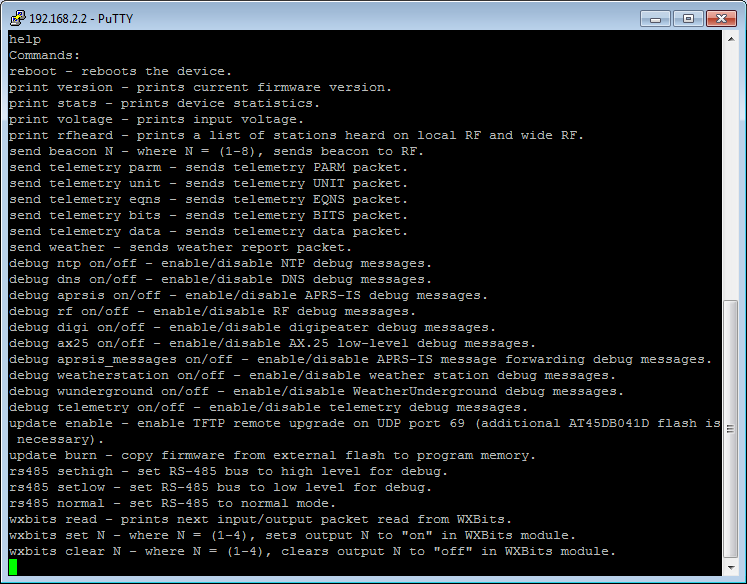
Lista de comandos telnet (capturada con el firmware v1.09)
La lista de comandos puede variar en versiones nuevas del firmware. No se describen aquí todos los comandos, solo los tipos:
print – muestra datos en la ventana del terminal telnet,
send – envía paquetes de prueba por RF,
debug – activa o desactiva mensajes de depuración en la ventana del terminal,
update – función de actualización remota del firmware,
rs485 – fija niveles en el bus RS-485 para probar el cableado,
wxbits – lee las entradas del WXBits y cambia el nivel de sus salidas.
12. Actualización remota del firmware por TFTP
El WX3in1 Plus 2.0 permite actualizar el firmware a distancia por Internet mediante el protocolo TFTP.
La regla general de las actualizaciones del WX3in1 Plus 2.0 es que siempre se actualizan a la vez el firmware y la configuración, para garantizar que la configuración es compatible con la versión del firmware.
Por eso es muy importante poner los ajustes IP correctos en la configuración antes de generar el archivo RUF y hacer la actualización. Si no, perderá el contacto con el equipo instalado en el lugar remoto.
El procedimiento de actualización remota es el siguiente:
Abra el WX3in1 Plus 2.0 Configurator,
Introduzca toda la configuración del equipo, prestando especial atención a los ajustes IP de la pestaña Network. Si exportó antes la configuración con “Configuration import/export->Save to file”, puede cargarla con “Configuration import/export->Read from file”,
Genere el archivo de actualización remota con el botón “Build remote update file” (nombre por defecto: wx3in1plus20.ruf). El firmware se toma del ejecutable del Configurador, así que las versiones de firmware y configuración de un archivo RUF siempre coinciden,
Inicie sesión en el equipo por telnet (más información en el capítulo “Interfaz telnet”),
Escriba el comando telnet “update enable” para activar la función TFTP del WX3in1 Plus 2.0,
Use su cliente TFTP para subir el archivo de actualización remota. En Windows, con el cliente TFTP integrado activado, use en la línea de comandos “tftp -i <IP del wx3in1> PUT wx3in1plus20.ruf”. En Linux puede usar, por ejemplo, “tftp -m binary <IP del wx3in1> -c put wx3in1plus20.ruf” (cliente tftp-hpa),
Al terminar la subida del archivo RUF, el terminal telnet mostrará: “(USER) Flash write finish, please wait for checksum verification” y, unos segundos después: “(USER) Checksum OK, use "update burn" command to copy firmware to program memory.”
Escriba el comando “update burn” para grabar el firmware en la memoria de programa del equipo.
Unos segundos después el equipo se reinicia, cerrando todas las conexiones, y en pocos segundos arranca con el firmware y la configuración actualizados.
Un archivo de actualización remota dañado no puede “brickear” el equipo. Toda la operación está protegida con sumas de control CRC y no permite cometer errores.
Pero si los ajustes IP son incorrectos, el equipo arrancará tras la actualización con una configuración de red errónea y perderá el contacto con él. Compruebe siempre los ajustes IP antes de generar el archivo RUF.
La función TFTP usa el puerto UDP 69, que debe redirigirse correctamente en el router al que está conectado el WX3in1 Plus 2.0. También debe redirigirse el puerto TCP 23 de telnet, necesario para la actualización.
13. Solución de problemas
En este capítulo se describen algunos problemas habituales de los usuarios del WX3in1 Plus 2.0 y cómo resolverlos.
Pregunta: ¿Qué debo poner en los campos Username y Password de APRS-IS?
Respuesta: en Username escriba el mismo indicativo y SSID que en el WX3in1 Plus 2.0, separados por un guion y en mayúsculas. Ejemplo: SQ3PLX-5.
La contraseña de APRS-IS debe pedirla al administrador de su servidor APRS-IS; también hay generadores de contraseñas en Internet. La contraseña (passcode) se calcula a partir del indicativo sin SSID, así que es la misma para todos los SSID de un indicativo. El valor por defecto, 12345, es solo un ejemplo.
Pregunta: Creo que el equipo no se conecta a APRS-IS, al servidor NTP, a WeatherUnderground, etc. ¿Por qué?
Respuesta n.º 1: compruebe la conexión física del WX3in1 Plus 2.0 a la red local. Tras conectar el cable RJ-45, el LED correspondiente del router o switch debe estar encendido, indicando una conexión física correcta. Si es así, pase a la respuesta n.º 2.
Respuesta n.º 2: revise los ajustes IP del equipo en la pestaña “Network”: dirección IP, máscara, puerta de enlace (Gateway) y DNS. Haga ping al equipo con “ping <IP del wx3in1>” desde el símbolo del sistema; debe responder. Compruebe que la puerta de enlace es la IP de su router. Si no lo es, el equipo seguirá respondiendo al ping, pero no podrá salir de la red local. Si todo está bien, pase a la respuesta n.º 3.
Respuesta n.º 3: puede haber muchas otras causas. Pero si los ajustes parecen correctos y no se conecta a ninguno de estos servicios, el problema puede estar en el DNS. Así se comprueba por telnet:
00:25:47 (DNS) Server name not found, need to nslookup: time.nist.gov. 00:26:03 (DNS) Server name nslookup timed out: time.nist.gov.
La primera línea indica que el WX3in1 Plus 2.0 no conoce el servidor “time.nist.gov”. Es normal: solo tiene que pedir su IP al DNS.
La segunda línea indica un problema: el servidor DNS no ha respondido a la consulta. Probablemente la IP del DNS está mal configurada. Consulte la dirección DNS correcta de su proveedor de Internet. En muchos casos también puede usar la IP del router como DNS, porque la mayoría de routers reenvían las consultas DNS. Con un DNS mal configurado no podrá conectarse a ningún servicio por su nombre de dominio.
Respuesta n.º 4 (solo Weather Underground): compruebe que el equipo tiene el firmware v1.13 (véase el capítulo 10.13.2).
Pregunta: No sé si el equipo recibe bien los paquetes APRS de la radio. ¿Cómo lo compruebo?
Respuesta: el primer indicador, y el más evidente, es el LED rojo “PC/PACKET” del WX3in1 Plus 2.0. Debe funcionar así:
cuando se recibe algo con el squelch de la radio abierto, se enciende el LED amarillo “RADIO RX”,
poco después de recibir un paquete se enciende el LED rojo “PC/PACKET”, indicando que el paquete se ha recibido y decodificado correctamente.
También puede comprobar por telnet si se ha recibido algo: aparecerá un mensaje indicando que se ha recibido un paquete APRS. Otra forma es el comando telnet “print stats” o la página web de estadísticas, donde el campo “APRS packet received (CRC OK)” debe tener un valor distinto de cero. La página web de ajuste de entrada muestra los niveles de entrada de los 10 últimos paquetes recibidos.
Pregunta: No sé si el equipo transmite bien los paquetes APRS por RF. ¿Cómo lo compruebo?
Respuesta: lo más sencillo es comprobar con una segunda radio APRS si recibe sus paquetes.
También puede comprobar en aprs.fi si sus paquetes aparecen en APRS-IS a través de otros i-gates cercanos. Para usar este método:
asegúrese de que hay un i-gate APRS cerca que pueda oír sus paquetes,
desconecte el cable RJ-45 del WX3in1 Plus 2.0 o desactive APRS-IS en los ajustes de las balizas, porque si no todos sus paquetes aparecerán en aprs.fi pasados por su propio equipo (incluso con la radio desconectada).
También puede buscar en los mensajes telnet paquetes recibidos que haya enviado su equipo y que hayan repetido otras estaciones cercanas. Compruebe además que la transmisión no está desactivada de forma global en la página web de ajuste de salida (firmware v1.09 y posteriores).
Pregunta: ¿Cómo compruebo si el equipo recibe datos de la estación meteorológica, el módulo de telemetría, el GPS o el termómetro?
Respuesta: el LED verde “EXT”. Debe parpadear a intervalos cortos, indicando que el dispositivo externo funciona y que el WX3in1 Plus 2.0 recibe datos correctos. El LED “EXT” es común a todos los dispositivos externos, así que si quiere usarlo como indicador de uno de ellos tendrá que desconectar los demás.
También verá por telnet mensajes de depuración de los dispositivos externos que le dirán con exactitud si están bien conectados.
Pregunta: Tras cambiar la configuración y/o actualizar el firmware, todos los LED parpadean continuamente y el equipo no arranca. ¿Por qué?
Respuesta: hay que usar versiones coincidentes del Configurador, de la configuración del equipo y de su firmware. Si descarga una versión nueva del Configurador, actualice siempre el firmware del equipo y vuelva a escribir la configuración para que todas las versiones coincidan.
Recuerde que no basta con actualizar el firmware: siempre hay que volver a escribir la configuración. Tampoco se puede leer la configuración actual con una versión del Configurador distinta de la del firmware/configuración del equipo.
Use la función “Configuration import/export” para guardar la configuración en el disco del PC cada vez que la cambie. Así podrá importarla en una versión nueva del Configurador.
Lamentablemente estas operaciones son inevitables, porque la configuración del equipo cambia a menudo entre versiones de firmware y un firmware nuevo no entiende la configuración antigua.
Pregunta: SmartBeaconing no envía ningún informe de posición. ¿Por qué?
Respuesta: compruebe que “SmartBeaconing” está en “Enabled” (capítulo 10.7.1), que un puerto RS-232 está configurado como “GPS” con la “GPS module baudrate” correcta, que la interfaz Bluetooth no está activada y que el LED verde “EXT” parpadea (posición GPS fijada). Los mensajes de depuración telnet “GPS” muestran los datos recibidos del receptor GPS.
Apéndice A. Historial de cambios del firmware
Cambios del firmware y del Configurador del WX3in1 Plus 2.0, según el registro de cambios publicado con el Configurador v1.13.
Versión
Cambios
v1.00
Primera versión del firmware.
v1.01
Corregida la presentación de temperaturas negativas del termómetro en las balizas; resolución de 0,5 °C en la telemetría del termómetro del panel trasero (coeficientes 0.0, 0.5, -64); coeficientes de telemetría de la tensión de alimentación 0.0, 0.075, 0.0 (antes 0.0, 0.079, 0.0); mejorada la precisión con que se muestra la tensión; corregido el ajuste de velocidad del GPS (la v1.00 usaba siempre 9600 baudios); corregidas y añadidas ayudas del Configurador; firmware integrado en el ejecutable del Configurador.
v1.02
Herramientas web de ajuste de entrada con la ventana WX3in1 Oscilloscope; ajuste web de salida con patrón de tonos de 1200 Hz / 2200 Hz; dirección MAC en la página de ajustes de red; niveles de entrada de los 10 últimos paquetes recibidos.
v1.03
Repetición limitada por alcance y por zona; lista avanzada “RF heard stations” por web; soporte experimental de DHCP; comprobación más estricta de latitud/longitud; balizas de 96 caracteres (antes 64); corrección de errores.
v1.04
Corregida la decodificación Mic-E para longitudes de 0 a 9 grados; pequeñas correcciones del Configurador y del firmware.
v1.05
Corregidos los cambios de configuración por web (error de las v1.03-v1.04); reescrito el código de soporte de WS-23XX.
v1.06
Corregidos los bloqueos de APRS-IS del cliente DHCP cuando el servidor DHCP cambiaba la dirección IP.
v1.07
Salida de paquetes KISS; nueva pestaña “External interfaces” con selección de la función de los puertos serie; soporte del monitor gamma RSS-131; corregida la renovación DHCP cada 60 s con concesiones de más de 31 días; cadena de baliza <tempf>; comodín ? en el filtro APRS-IS→RF y en el filtro de indicativos del digipetidor; calibración de la medida de tensión.
v1.08
Soporte del módulo Bluetooth BT/Microsat; KISS por puerto serie (o Bluetooth) en ambos sentidos (funcionamiento como TNC); salida de paquetes KISS por TCP/IP; servidor APRS-IS simple; corregido el soporte de PeetBros y Davis roto en la v1.07; modo experimental PeetBros complete record mode.
v1.09
Decodificación/codificación experimental 9600/GMSK; opción para desactivar la TX de forma global (ajuste de salida por web); servidor APRS-IS simple ampliado.
v1.10
Envío experimental de estadísticas (Remote access → Statistics upload); condición “No APRS-IS” para activar balizas; indicativo del equipo en el título de la página web.
v1.11
Filtro de indicativos ampliado de 10 a 20 campos; filtro de paquetes APRS-IS a RF ampliado de 12 a 24 campos; limpieza del firmware.
v1.12
GPS SmartBeaconing; valor máximo de telemetría para estadísticas de paquetes cambiado de 255 a 999; nuevas fuentes internas de telemetría.
v1.13
Corrección del soporte de Weather Underground, necesaria tras los cambios en sus servidores.
Apéndice B. Rangos de valores de la configuración
Rangos de valores y longitudes de campo que comprueba el Configurador v1.13 al escribir la configuración. Si un valor está fuera de rango, el Configurador muestra un mensaje de error en la ventana de mensajes.
Campo
Valores permitidos
Callsign / SSID
hasta 6 caracteres; se rechazan los indicativos demasiado cortos / SSID 0 - 15
SSID del filtro de indicativos y del filtro APRS-IS→RF
0 - 15 o *
SSID de destino / ruta (balizas, telemetría, meteorología, I-Gate, SmartBeaconing)
0 - 15
Intervalo de baliza RF / APRS-IS [min]
5 - 1440, o 0 para desactivar
Mensaje de baliza
hasta 95 caracteres; algunos caracteres no están permitidos
Dirección IP / máscara / puerta de enlace / DNS
cada octeto 0 - 255
Puerto del servidor APRS-IS
0 - 65535
Nombre del servidor APRS-IS / del servidor NTP
hasta 31 caracteres
Filtro del servidor APRS-IS
hasta 128 caracteres
Tiempo de reconexión APRS-IS [min]
1 - 60
Tiempo de los búferes APRS-IS heard, local RF heard y RF heard [min]
1 - 240
Local RF heard max. digi-hops
0 - 8
Máx. paquetes no mensaje por 1 / 2 / 3 min
1 - 240
Statistics upload: puerto / intervalo [min] / Device ID
0 - 65535 / 1 - 240 / hasta 5 cifras
Intervalo de parámetros / datos de telemetría [min]
5 - 1440
Retardo del primer paquete de telemetría [min]
0 - 250
Telemetry project title
hasta 23 caracteres
Intervalo del informe meteorológico RF / APRS-IS [min]
5 - 1440
Comentario del informe meteorológico
hasta 32 caracteres; algunos caracteres no están permitidos
Weather Underground: envío normal / rapid fire
1 - 240 min / 5 - 60 s
Status text de SmartBeaconing
hasta 40 caracteres
Nota: el Configurador usa el texto “Statistics upload interval” en dos mensajes de error, “(0 - 65535)” y “(1 - 240)”. El primero se refiere, muy probablemente, al puerto del servidor de envío.